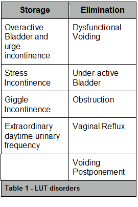
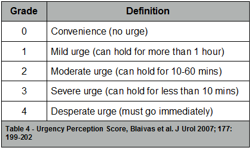

Many are familiar with the often quoted statement of Thomas Watson, Chairman of IBM who in 1943 stated that “I think there is a world market for maybe five computers”. Less well known but equally inaccurate is Bloomfield’s declaration in 1956 that “Owing to the relatively small number of affected children it is unprofitable to make a more detailed study of day wetting”.
Daytime wetting disorders are largely the result of how a child is ‘built’ - anatomical abnormalities, how they are ‘wired’ - neurological abnormalities or how they use what they have. It is this latter group of functional voiding disorders that this chapter will focus on.

According to the International Children’s Continence Society Dysfunctional Voiding is a specific subtype of daytime voiding abnormality (1). It is the result of regular inappropriate contraction of the urethral sphincter during micturition. As such it is not strictly speaking a daytime wetting disorder, though it may be associated with urinary incontinence. The ICCS defined daytime lower urinary tract conditions may be divided into abnormalities of either of the two primary bladder functions, storage or elimination (see Table 1). There is however considerable overlap between these conditions and grouping patients into one category is even more complex than with enuresis. Patients may have symptoms of more than one sub-type (e.g. overactive bladder and dysfunctional voiding) or may evolve from one category to another. Children may display symptoms from more than one sub-type either synchronously (e.g. overactive bladder and dysfunctional voiding) or metachronously, progressing from predominantly one sub-type to another (e.g. overactive bladder thru’ voiding postponement to under-active bladder.
Until the publication in 1998 and the subsequent revision in 2006 of standardized terminology for lower urinary tract dysfunction there was sufficient variability in the definition of incontinence in children to preclude meaningful comparison and evaluation. Various authors placed differing levels of emphasis on the severity, frequency or duration of the incontinence episodes. Cultural diversity, research methodology and response rates to population questionnaires have further confounded prevalence rates. What is evident from these studies is 1) a geographical variation (probably the result of a lower threshold for reporting, coupled with better documentation); 2) a slightly higher prevalence among girls, especially as they get older; and 3) a reduction in prevalence with increasing age (see Table 2).
In order to have an understanding of the pathophysiology of voiding dysfunction it is first necessary to understand the complexities that underlie lower urinary tract function.
Genetics/Etiology
![Text Box: Author Year Country Selection Method Sample Size Response Rate Age(yrs) Prevalence Ref. J. Blomfield et al. 1956 UK All children born in Edinburgh in first week of March 1946 and followed by health visitors 5386 92% 6 Overall - 2.9% Male - 1.8% Female - 4.1% Lancet, June 2, 850-852 T. Thomas 1980 UK Postal survey of all patients on the lists 12 family practices. 22430 89% (5-85) 5-14 Male 17.8%, female 16.4% BMJ, 281(6250), 1243-1245 D. Bloom et al. 1993 USA An opportunistic questionnaire of toilet-trained children encountered in routine clinical practice. Patients undergoing evaluation or treatment of genito-urinary conditions were excluded. 3000 40% 1.5-27 4yrs - 13% 6yrs - 10% 8yrs - 10% 10yrs - 1% J Urol, 149(5), 1087-1090 L. Swithinbank et al. 1998 UK All eligible children in schools surrounding district hospital. No exclusion criteria. Patient completed questionnaire. Same cohort reassessed 4 years later. 1987 60% 80% 11-12 15-16 Male - 7.2%, Female 16.6% Male 0.98%, Female 4.7% BJU Int, 81, 90-93 P. Sureshkumar et al. 2000 Australia All chilldren due to start school in 1998, from randomly selected schools in the greater Sydney Metropolitan area. No exclusion criteria. Questionnaire available in 6 different languages. 2020 70% 6 19.2% (at least one episode in past 6 months) 2% wet twice or more per week J Pediatrics, 137(6), 814-818 E. Bakker et al. 2002 Belgium All students in final 2 years of primary school from randomly selected schools, No exclusion criteria, all social classes represented 5646 77% 11.5+/- 0.5 Overall - 7.9% Isolated daytime - 4% Day & Night - 3.5% Sacnd J Urol Nephrol, 36(5), 354-362 U Soderstrom et al. 2004 Sweden All students in first and fourth grade of primary school in Swedish city of Eskilstuna. No exclusion criteria 2222 67% 7.410.4 Male - 6.8%, Female 5.8%Male 4.1%, Female 4.3% Acta Pediatr, 93(3), 386-389 M. Kajiwara et al. 2004 Japan All students attending 11 schools randomly selected from 140. Excluded children with history of neurological disease. 6917 76.4% 7-12 Male - 6.2% Female 6.3% J Urol, 171(1) 403-407 T. Hansakunachai et al 2005 Thailand All students in first to sixth grade from 8 schools randomly selected from 50 educational authority areas in Bangkok. No exclusion criteria. 4966 69.5% 5-15 0.34% J Dev Behav Pediatr, 26(5), 356-360 V. Loening-Baucke 2007 USA Retrospective case note review of records of all children between 4-17 yrs seen at primary care paediatric clinic of university hospital. Excluded if not seen before 6 months of age 482 Not applicable 4-17 5.1% Arch Dis Child, 92(6), 486-489 P. Sureshkumar et al. 2009 Australia Random selection of children, in first four years of school, from schools in metropolitan Sydney. 60 (72%) of 83 schools approached agreed to participate. Parent administered questionnaire. No exclusion criteria. 8160 35% 5-13 Overall 16.9% Male - 13.7% Female - 21.5% J Urol, 181(2), 808-816 J.M. Chung 2011 Korea A raondom selection of 26 kindergardens and 27 primary schools across Korea. Parent administered questionaire, no exclusion criteria 19240 85.8% 5-13 Male - 4.6% Female - 4.3% Urology, 76(1), 215-219 L Swithinbank et al. 2010 UK On-going population-based study looking at health and development of children. Parent completed questionnaires. No exclusion criteria 13973 69% 64% 61% 59% 56% 4.5 5.5 6.5 7.5 9.5 13.6% 7.8% 9.7% 6.9% 4.4% Acta Pediatr, 99(7), 1031-1036 Table 2 - Prevalence Rates for Urinary Incontinence](dysfunc_void_clip_image001_0001.gif)
As discussed in the chapter on Nocturnal Enuresis some genetic predisposition to enuresis has been demonstrated. By contrast the genetics and heritability of daytime urinary incontinence have not been extensively studied. This is explained in part by the diversity of etiologies and the heterogeneous nature of the patient population. However evidence continues to emerge illustrating the multi-factorial etiology of voiding dysfunction. The Avon Longitudinal Study of Parents and Children (ALSPAC), which is an on-going population study following, prospectively, a birth cohort of almost 14,000. In a report on 8,230 children the prevalence of daytime urinary incontinence was 7.8%, of which 6.8% had infrequent (< 2 episodes/week) wetting and 1% wet twice a week of more frequently (1). The odds ratio of a child with a maternal history of daytime incontinence herself as a child developing infrequent urinary incontinence was 2.64 and 5.47 if the father had suffered from daytime urinary incontinence. The odds ratios were even greater in children with severe enuresis reaching 3.28 with a maternal history and 10.1 if the father had a history of childhood enuresis. Further complicating efforts to identify genetic associations is the heterogeneous nature of the various sub-types of daytime urinary incontinence e.g. dysfunctional voiding, urge syndrome, giggle incontinence, polakiuria etc. That voiding dysfunction may have a congenital or inherited predisposition is supported by the finding of a loss of function mutation in the heparanase 2 gene in patients with Urofacial (Ochoa) Syndrome(2). Originally described by Elejalde in 1979 but called after Dr. Bernardo Ochoa who contributed 36 patents with non-neuropathic neuropathic bladder and ‘inversion’ of facial features or a characteristic facial grimace when smiling (http://omim.org/entry/236730). Affected patients often present prenatally or in early childhood (before the age of toilet-training) suggesting a congenital rather than an acquired pathogenesis.
Physiology
Normal bladder functions of urine storage without leakage and volitional emptying are the result of complex interactions between the bladder, the somatic, autonomic and central nervous systems. The seemingly simple and unique ability of the bladder to accommodate increasing volumes of urine at low pressures is the result of rather complex interactions between the smooth muscle cells and extracellular matrix of the bladder wall(3). The extracellular matrix rather than merely being a scaffold for the cells of the bladder wall is continually being remodeled in reaction to stresses and strains placed upon it in a process referred to as ‘dynamic reciprocity’. As well as collagens, elastins, laminins and integrins the extracellular matrix is awash with bioactive substances such as Matrix Metalloproteases and a host of growth factors from VEGF to EGF and TGF(4). The amount of collagen in the bladder wall is considerable with more than a third of the dry bladder weight being collagen. Though some of the collagen can be found with the muscle bundles the majority of collagen in the bladder wall is located outside of the muscle bundles. The ability of the bladder to hold reasonable quantities of urine at a low pressure is a reflection of its compliance. The compliance of the bladder has both active (muscle) and passive (collagen etc) components. It has been demonstrated that the inner mucosal layer of the bladder has the capacity to expand with little or no resistance due at least in part to the presence and composition of collagen contained within. The outer detrusor layer serves to limit this distention in an active manner (5). The result is a distensible bladder that usually stores urine at a pressure of less than 10-15cm H20 until the bladder reaches its capacity. There is a correlation between bladder compliance and the amounts of Collagen types I and III. Outlet obstruction is associated with increased deposition of collagen type III which in turn induces muscle hypertrophy resulting in bladder wall thickening and reduced compliance (3).
A detailed discussion of bladder neurophysiology is beyond the scope of this chapter. In its simplest form the bladder has three sources of neurological input (6).
There are two principal types of afferent fibre within the bladder and are principally found in a sub-urothelial plexus.
Higher, supra-spinal neurological control is mediated by the Pontine Micturition Centre(PMC) or Barrington’s Nucleus which co-ordinates detrusor contraction and sphincter relaxation in response to bladder sensory input ascending thru the peri-aqueductal grey matter, thalamus and hypothalamus. Conscious voiding control originates in the Anterior Cingulate Gyrus and is also coordinated via the PMC.
Acting via a spinal reflex pathway bladder filling detected by Ad fiber initiates sympathetic activation of the muscles of the bladder neck and proximal urethra via a- adrenergic receptors and relaxation of the detrusor muscle via b-adrenergic receptors. It also triggers somatic activation of the external urethral sphincter. Voiding is initiated in the cerebral cortex and begins with relaxation of the external urethral sphincter together with inhibition of sympathetic activity and para-sympatheticly induced detrusor contraction.
The primary neurotransmitter involved in micturition control is Acetylcholine which acts on two different receptors - nicotinic and muscarinic. Nicotinic receptors have little if any role in control of micturition. There are five muscarinic receptor subtypes, M1 to M5, of which subtypes M2 and M3 are the most prevalent in the bladder. M2 receptors (70%) are predominant but it is M3 that are largely responsible for detrusor contraction.
All of these structures are present at birth but in common with most volitional neuromuscular functions in human neonates are not functionally developed at birth. The rate of acquisition of urine control has been determined by a number of studies but the most recent and relevant is by Sillen et al who in a series of publications has prospectively studied the continence rates in children from birth of preterm infants to 6 years old (7-9). They found that in a western culture where toilet training is driven by the sensory awareness of the child that perception of bladder fullness was reported by 31%, 79% and 100% of children aged 2, 3 and 4 years respectively. The median age of attaining daytime dryness was 3.5 years and all but one child was dry by night within 10 months of being dry day. There is evidence that earlier initiation of toilet training is associated with earlier completion but it does take longer (10).
Further evidence of the relative immaturity of the control of micturition at birth is reflected in incomplete bladder emptying/interrupted voiding due to presumed detrusor-sphincter dysco-ordination. They noted interrupted voiding in fetuses based on repeated antenatal ultrasonography, 58% of preterm infants, 33% of term infants, 25% of 1 year olds and 3% of children prior to toilet-training. This dysco-ordination has been demonstrated urodynamically by this group and others (11).
That this age of achieving dryness is driven primarily by societo-cultural norms is supported by the increasing age at which it is attained and by the significantly earlier age of dryness in different cultures for example the Digo people of East Africa whose infants are dry by day and night by the age of 5-6 months (12). Similarly early age at toilet training has been demonstrated in Vietnamese children (13). This cultural difference is not due to inherited or genetic differences in maturation of the central nervous system as the technique has been successfully applied to an italian infant (14). We also capitalize on this ability to impose learned cortical control on lower urinary tract function in older children when we apply biofeedback training methods to treat children with continence issues.
Pathophysiology
To try and define the pathophysiology or etiology of pediatric dysfunctional voiding or other daytime wetting disorders is difficult given the varied nature of presentation and classification. According to the ICCS incontinence, the uncontrollable leakage of urine can be either continuous or intermittent (1). Continuous incontinence is almost always due to an anatomical abnormality and will not be discussed further in this chapter. Strictly speaking the term intermittent incontinence, the day or nighttime loss of discrete amounts of urine, is not applied until after the age of 5 years however if the child has previously been dry for a period of 6 months or more investigation and intervention does not need to be delayed. Nighttime intermittent incontinence is addressed in the chapter on nocturnal enuresis. There is a great deal of overlap between the daytime presentation of incontinence with occasional progression from one to another. For clarity and to facilitate comparison of published articles/series the ICCS strongly advocates greater emphasis on the accurate description of patient symptomatology using their prescribed terminology rather than attempting to pigeon-hole patients into specific sub-groups. That said there are some specific groups that can be reasonably accurately defined:
Pollakiuria or Extraordinary daytime urinary frequency.
This term refers to children who present with frequent small volume voids during the daytime. The ICCS definition mandates that they void at least hourly, however most case void much more frequently that that (1,15). A unique pathognomic feature is the absence of any nocturnal polyuria. The pathogenesis is not understood. Dietary intake of bladder irritants, psychosocial or emotional stress and even climatic factors have all been implicated.
The absence of any clear precipitating of provoking factors is indicated by the paucity of successful treatment modalities. The cornerstone of treatment is reassurance that the condition is self limiting, lasting from a few days to rarely a few years but on average 6 months and recurrence is rare. For the 50% who have an identified psychosocial or emotional stress counseling to address the underlying stressful event and the natural history of the condition is all that is needed. Clearly management should include the exclusion of known dietary triggers such as caffeinated soft drinks, acidic fruit juices, drinks with a high oxalate of calcium content. There is no ideal drug therapy but treating with anticholinergics such as Oxybutynin has some empirical merit for refractory or prolonged cases. For some Pelvic Floor Biofeedback has been successful but remains to be tested in a randomized trial to distinguish benefit from spontaneous resolution.
Giggle Incontinence or Enuresis Risoria
Giggle incontinence is again a very specific condition where a patient, usually female, otherwise lacking any lower urinary tract symptoms suffers complete bladder emptying during or immediately after laughing. The ICCS places importance on distinguishing genuine isolated giggle incontinence from laughter provoked detrusor overactivity (this latter patient group have on close investigation other lower urinary tract dysfunction) (1). The frequently large volume of the incontinent episode provoked by laughter is the defining feature for which no cause has as yet been identified.
Analogies and comparison with cataplexy have been made. Cataplexy is a crucial component of the Narcolepsy, a disorder characterized by excessive daytime sleepiness, abnormal REM sleep, hypnagogic hallucinations cataplexy and sleep paralysis (16). Cataplexy is associated with a sudden loss of striated muscle tone which may be limited to facial or limb muscles but may be more extensive. It is usually triggered by positive emotions such as laughter - hence people who fall down laughing! There is a strong family history in narcolepsy sufferers with an inherited predisposition. 85-95% of sufferers carry the HLA DQB1*0602 allele. Narcolepsy has been shown to be associated with the loss of hypocretin ( a wakefulness-associated neurotransmitter present in CSF) from the hypothalamus. How this relates to cataplexy or to giggle incontinence is yet to be elucidated.
Given the similarities with cataplexy Sher and Reinberg hypothesized a similar pathogenesis and applied methylphenidate (Ritalin, previously used for narcolepsy/cataplexy) to refractory children with giggle incontinence to varying success in all (17). This success has subsequently been repeated with a larger series of patients
For patients in whom the Ritalin failed or was not tolerated treatment focuses on behavioral modifications such as frequent bladder emptying, avoidance of situations known to provoke laughter (how depressing!!) and a hope that they will grow out of it which is not likely. Pelvic floor biofeedback therapy has been proven to be of some benefit.
Vaginal Voiding
This really is a form of psuedo-incontinence rather than true incontinence as the urine that leaks immediately post-micturition, upon resuming an upright posture is urine that during micturition has entered the vagina. It may be associated with labial adhesions in the younger child, possibly by causing recurring vulvovaginitis contributing to the persisting adhesions and ongoing vaginal voiding. It more typically presents in older girls who tend to be overweight and is attributed to poor voiding posture with internal rotation of the hips and closure of the perineal area. Sitting backwards on the toilet (facing the cistern) is both diagnostic and therapeutic. In the author’s experience compliance with this treatment strategy is short-lived as it usually requires complete removal of underwear from one leg. It does however confirm the diagnosis and emphasizes to the patient the curative nature of correct posture.
Stress Incontinence
Genuine stress incontinence (of the kind seen in post-partum women) is exceptionally rare in neurologically and anatomically normal children. Episodes of urinary incontinence may be seen to be precipitated by exercise in adolescent female athletes. Urinary incontinence, associated with coughing has been reported in 19-49% of girls increasing to 30-69% of adult women with cystic fibrosis (18).
Overactive Bladder, Urge Syndrome, Urgency-Frequency Syndrome
According to the International Children’s Continence Society “the subjective hallmark of overactive bladder is urgency (the sudden and unexpected experience of an immediate need to void)” associated with which may be urinary incontinence and increased voiding frequency (1). It is probably the most common cause of urinary incontinence in children and has been known by a number of previous synonyms including hyperactive bladder, detrusor overactivity or irritable bladder. It has been estimated that 5 to 7 million American children, 6 years and older are affected with urinary incontinence, with a peak incidence between the ages of 5 and 7 years (19). For too long overactive bladder was viewed as either the result of a delay in maturation of micturition control or a regression to a childhood pattern, hence the synonym of persistent infantile bladder. Despite affecting over 34 million individuals in the USA and an estimated annual cost of $12.6 billion, the pathogenesis of OAB is still not completely understood (20). In adult patients overactive bladder has been associated with a number of differing etiologies - 1) neurogenic (e.g. Spina Bifida, Spinal Cord Injury); 2) myogenic (e.g. obstruction, benign prostatic hyperplasia; 3) inflammatory (e.g. interstitial cystitis, infection); 4) idiopathic (21). Whilst children may also be subject to these same predisposing factors the majority (and the focus of this chapter) will have idiopathic detrusor overactivity or IDO.
Urgency has been described as the cornerstone symptom of overactive bladder (22) and in fact is the only symptom that the patient must have to diagnose overactive bladder. Given the pivotal role of urgency in diagnosing overactive bladder it is imperative that we be able to objectively appreciate, assess and quantify its presence and severity. Implicit in the definition of urgency is the understanding that it can be distinguished from normal bladder sensation of a need to void as the bladder reaches capacity. For some patients however urgency is a continuous or chronic sensation of a need to void to avert urinary incontinence rather than a feeling of sudden onset. Not all episodes of urgency result in incontinence or micturition, in approximately 50% of cases the patient can’t suppress the urge. Distinguishing significant urgency from ‘normal’ is further complicated by the discovery on enquiry of an urgent need to void (<15mins) in 10% of women (22).
How one assesses urgency is also the subject of much investigation and debate. The simplest tool is to ask. However in asking we are exposed to a number of confounding biases including but not limited to recall bias, previous opinion bias and my own personal favorite obsequiousness bias (where responses are altered by respondents in the direction they perceive desired by the investigator) (23). Brubaker, to demonstrate the complexity of assessing urgency as a symptom, makes an excellent analogy to hunger. The sensory perception of hunger is heightened by asking about it or in an environment where the subject is exposed to the sights, sounds and smells of foods. Similar neurophysiological mechanisms may be at play in the urgency associated with running water, washing hands or the key in the front door. To circumvent this investigator prompting, a number of researchers have developed patient activated input devices to record and grade severity of urgency (without prompting) during and correlated with urodynamic studies (24,25). Others have developed and validated an ‘urge scale’ to measure urgency (26). There are still other subjective (Indevus Urgency Severity Scale (IUSS); Urgency Perception Score (UPS)) and objective (‘warning time’ - the interval between first sensation of urgency and voiding; voiding diaries) scoring systems, with the objective measures having greater reliability, repeatability and less susceptibility to confusion between urge and normal filling sensations (27).
Urgency may be centrally or peripherally mediated. That urgency may be centrally mediated is supported by the ‘latch-key’ urgency described above. Furthermore the presence of urgency in patients without demonstrable rise in detrusor pressure and the reduction in urgency at initiation of micturition, when the detrusor pressure is still increasing, support a supra-vesical source. Whether ‘latch-key’ urgency is the result of a centrally-mediated release from cortical suppression of a spinal voiding reflex or represents some form of Pavlovian conditioning is not known (28). Almost all (75-100%) of patients with supra-pontine lesions and 25% of those with Parkinson’s disease have detrusor over-activity (29). Functional magnetic resonance imaging (fMRI) has greatly enhanced our understanding of cortical activity during the storage phase of bladder function. In normal healthy subjects afferent signals from the bladder and urethra are received in the peri-aqueductal grey matter (PAG) and are relayed via the thalamus to the insula, to register the sensation of bladder filling. This activity is monitored by the anterior cingulate gyrus (ACG) which effectively coordinates the response to these signals in addition to motor and emotional input, including input from the pre-frontal cortex where a decision to void or not arises ultimately resulting in a decision to either relax or maintain inhibition of the voiding reflex (30). Individuals with urgency and urge incontinence demonstrate altered brain responses to bladder filling both at low and high bladder volumes and in response to detrusor overactivity. They tend to demonstrate weak responses at low levels of bladder filling, exaggerated (perhaps learned) responses at large bladder volumes and again weak or deactivated pre-frontal cortical activity during detrusor overactivity perhaps explaining the involuntary nature of urge incontinence and the often observed apparent lack of awareness.
Peripheral neurological disorders are also associated with detrusor overactivity as seen in patients with Multiple Sclerosis which is usually associated with spinal involvement and also seen in patients with spinal cord injury (29). The complex interaction between the peripheral nerves and micturition is evidenced in the successful suppression of detrusor overactivity by sacral nerve root stimulation, dorsal penile nerve root stimulation and posterior tibial nerve stimulation with transcutaneous electrical stimulation (31). Regardless of whether the loss of neurological inhibition is the result of a central or peripheral neurological disorder, both probably result in increased afferent activity from sensitization of the normally silent C fibers. This is sometimes referred to as the neurogenic hypothesis on the origin of lower urinary tract symptoms (32). Alternative, but not necessarily exclusionary hypotheses are the myogenic and urothelial hypotheses.
The myogenic hypothesis proposes that a deregulation of normal detrusor smooth muscle excitability and communication results in uninhibited bladder contractions. Contrary to popular belief we know that the normal bladder is not an inert elastic container that simply accommodates increasing urine volumes during the storage phase of the micturition cycle. We have known for over 120 years that the bladder during filling demonstrates autonomous or non-rhythmic contractions that do not result in micturition (33). The theory behind these ‘micromotions‘ or micro-contractions was that they both facilitated local stretching or micro-stretching of the bladder wall and triggered afferent ‘sensory‘ signals to the higher cortical regions (34). These localized contractions have been demonstrated in animal models and in-vitro with human detrusor tissue and have been shown to be a feature of the smooth muscle cell (related to Ca++ influx) rather than triggered by neurological input i.e. they still happen in the presence of neurotoxins (35). How these naturally occurring and seemingly essential micro-contractions relate to larger more generalized or widespread detrusor contractions seen in detrusor overactivity is still being established especially as the ability of an electrical impulse to spread from detrusor myocyte to myocyte is diminished relative to other smooth muscles. There are fewer gap junctions between adjacent detrusor smooth muscle cells than seen in cardiac smooth muscle. However this increased resistance or reduced conductivity seen in the detrusor is associated with an enhanced local excitability which may be relevant to that pathophysiology of detrusor overactivity (35).
The urothelial hypothesis highlights that the urothelium is much more than a water-proof barrier, in fact it is possibly the most complex structure in the bladder. The epithelium itself has a number of unique properties that enable it to fulfill its role. The spherical shape of the bladder provides the minimum of surface area to volume of urine during the storage phase. The innermost layer of cells, adjacent to the lumen, so-called umbrella cells or facet cells have the capacity to infold their epithelial surface to provide a mechanism for stretching with increasing bladder volumes (36). It is relatively impermeable to passive transport of molecules, whether this is due to the tight junctions between the umbrella cells or the glycosamino-glycan layer of Uroplakins that sit on top of the epithelium has not been determined. Because the urothelium is not absolutely impermeable it has also has some active transport mechanisms to ensure urothelial cellular homeostasis (37). The urothelium has an inherent inertness which serves to protect and preserve it’s impermeability.
As well as its barrier function the urothelium expresses a number of sensory receptors more typically found on peripheral nerves. These include TRPV1 (transient receptor potential cation channel subfamily vanilloid member 1). TRPV1 expression has been shown to be increased in both Idiopathic Detrusor Overactivity and Neurogenic Detrusor Overactivity. Increased expression of purinergic receptor subtypes (P2X and P2Y) has also been documented in IDO and NDO and are thought to be responding in an autocrine or paracrine manner to ATP released from the urothelium. Cannabinoid receptors (CB1) have also been found in urothelium, as have both alpha and beta adrenoreceptors which when stimulated have been shown to release ATP and NO. All five muscarinic receptor subtypes have been identified in urothelium with M3 widely distributed, M1 localizing to the basal cell layer and M2 to the umbrella cells (32). The urothelium secretes an equally wide range of bioactive substances such as ATP, NO, ACh, CGRP. ATP is released in response to stretch, muscarinic and adrenergic receptor stimulation and stimulation of TRPV1. By acting on the nerves and interstitial cells in the sub-urothelial area ATP is thought to signal bladder fullness, possibly activating micturition. NO triggered by the same stimuli appears to have an inhibitory action on the bladder. This is suggested by the inhibition of detrusor overactivity in animals treated with NO donors and the induction of overactivity when subjected to NO scavengers. Urothelial cells have also been shown to release ACh in response to mechanical or chemical stimulation. No specific role has yet been found for CGRP in the bladder.
Beneath the urothelium is the equally functionally important sub-urothelial layer which contains connective tissue, nerves and blood vessels. Whilst the most sensitive nerve endings in the bladder are located in the detrusor muscle and transmit via the myelinated A delta neurons. The nerve endings of the unmyelinated C-fibres on the other hand terminate in the urothelium and lamina propria. Under normal circumstances C-fibres are thought to only be activated by bladder distention greater than that which activates A delta fibres. It is thought that C-fibre activation becomes relevant in pathological conditions and therefore may be more relevant to the sensation of urgency (38). Many of the nerves in the lamina propria express receptors for Substance P and CGRP as well as TRPV1 and P2X receptors. That C-fibres can be stimulated by urothelial derived neurotransmitters implicates the urothelium directly in the generation of urgency. Furthermore the lamina propria contains interstitial cells that form a functional syncytium that may help to propagate a depolarization wave or localized detrusor contraction in response to urothelial derived neurotransmitters. Detrusor overactivity has been linked to increased Gap junction expression in lamina propria interstitial cells possibly having a role in the genesis of DO thru enhanced conductivity. Some of these interstitial cells have recently been shown to have properties similar to the gut derived Interstitial Cells of Cajal and therefore capable of spontaneous activation. This has led to further comparisons with the gastrointestinal neuro-enteric system suggesting that the nerves and interstitial cells of the urothelium may be arranged into functional rather than anatomical ‘myovesical’ plexuses analogous to the myoenteric plexus of the GI tract (39). Clearly the urothelium is an active participant rather than an innocent bystander (40).
As we have seen here and in the chapter on enuresis our understanding of the complexity of the neurological and vesical contributions to bladder function have grown exponentially in recent decades. No longer can we view the bladder as a muscular bag over which we exercise volitional control. Rather the bladder is a complex sensory organ capable of responding to a variety of differing stimuli. Where previously it was thought that conscious bladder sensation arose in a consistent and predictable manner starting with ‘first sensation of bladder filling’, ‘first desire to void’ and ‘strong desire to void’ (41), we now know that the Central nervous system is constantly being inundated with sensory information, that could be described as ‘afferent noise’ (42). Afferent sensory information from the bladder is continually arriving in the CNS and which impulses reach consciousness and trigger micturition remains to be elucidated. The constant ‘streaming’ of bladder sensations, though not conscious, are able to be accessed at will to provide a snapshot of the current state of bladder filling. This necessity to ‘ignore’ some afferent output from the bladder, in order to focus on other daytime activities, may explain some of the features associated with voiding dysfunction such as impaired sensation of the need to or often of the act of voiding.
Dysfunctional Voiding, Dysfunctional Eliminations Syndrome, Nonneurogenic Neurogenic Bladder
Dysfunctional voiding, as defined by the ICCS (1), is a term that can only be applied with either uroflowmetric or urodynamic evidence of inappropriate sphincteric contraction during micturition resulting in a staccato urinary stream. It is the equivalent of detrusor-sphincter dyssynergia seen in patients with overt neuropathy and results from a loss of normal coordination between the detrusor and external sphincter. As it is a symptom of the voiding phase it can co-exist with storage phase symptoms such as overactive bladder. In fact dysfunctional voiding is often considered to have arisen as a response to urge incontinence where heightened pelvic floor tone develops to prevent incontinence and ultimately the loss of adequate relaxation during micturition. This often leads to incomplete bladder emptying, high post-void residuals and recurrent urinary tract infections which then cause bladder inflammation and urgency thus creating a vicious cycle. An alternative hypothesis is that dysfunctional voiding is due to psychosocial (as seen in girls with a history of sexual abuse) or centrally mediated phenomenon (as seen in children with Ochoa Syndrome or ADHD) (43). Further confusion arises from the alpha-adrenergic activity of the centrally acting agents used to treat ADHD which may therefore precipitate or aggravate dysfunctional voiding.
The most extreme end of the dysfunctional spectrum is Hinman-Allen Syndrome or Non-neurogenic Neurogenic Bladder (44). Originally described by Beer in 1915 as chronic urinary retention in children, type 2C or due to spasticity of the sphincter without neurologic signs but presumed due to disease of the sacral cord (45). That Hinman-Allen Syndrome represents the end-stage of an acquired voiding dysfunction has been called in to doubt by publications that have identified patients as young as 5 months, well before the age of toilet training or the acquisition of volitional bladder control (46). Jayanthi and others have reported cases diagnosed post-natally but with antenatal features of severe hydronephrosis suggesting a congenital or pre-natal etiology (47). However we do no from video-urodynamic studies carried out in asymptomatic, control infants that dyscoordinated and high pressure voiding is a normal phenomenon. As with detrusor overactivity our emerging understanding of the varied pathogenesis of dysfunctional voiding would suggest that there are differing sub-types that may respond better to differing treatment strategies whether that be hypnotherapy a-la Hinman for late onset ? psychogenic/? sexual abuse patients, early vesicostomy for suspected but unconfirmed antenatal cases or Biofeedback +/- alpha-blockers for those who present in childhood. One of the defining features of Hinman-Allen Syndrome is the associated renal impairment, the origin of which is again probably multifactorial and related to high intra-vesical pressures, reduced bladder compliance, recurrent urinary tract infections and vesico-ureteric reflux.
The association between dysfunctional voiding and vesico-ureteric reflux is well documented having been first recognized by Lapides in 1970. Of the children enrolled in the International Reflux Study 18% had dysfunctional voiding with a lower prevalence among those with spontaneous resolution of their reflux (43). The relationship between VUR and dysfunctional voiding is a complex one of cause and effect. That VUR may arise as a result of bladder dysfunction is supported by the reflux seen to develop in patients with anatomical outlet obstruction such as Posterior Urethral Valves and in Neurogenic Destrusor Overactivity or Detrusor Sphincter Dyssynergia seen in patients with Spina Bifida. There are numerous studies documenting 38-75% prevalence rates of dysfunctional voiding in children with vesico-ureteric reflux (48). Successful treatment of dysfunctional voiding with biofeedback or anticholinergic medication has been associated with resolution of VUR in 37-63% of patients with a downgrading of the grade of VUR in a further 16-29%. In a recent review of the literature Sillen was unable to convincingly show evidence of a significant positive effect on the resolution of VUR following treatment of dysfunctional voiding.
The relationship between bowel and bladder dysfunction has been discussed elsewhere, the association is so well documented that Koff coined the term Dysfunctional Elimination Syndrome. In fact Koff found that bowel dysfunction (constipation) had an equal if not more significant impact on the spontaneous resolution of VUR (49). Dysfunctional elimination syndrome is more common in girls (50) with a peal incidence between 5-12 years of age (51). Though there is an association a clear causal relation has not been demonstrated.
Diagnosis
Patients are usually referred to a Pediatric Urologist either because of recurrent urinary tract infections or intractable urinary incontinence - >99% (52). They have usually been receiving treatment from their family practitioner and/or Pediatrician (who may or may not have an interest in incontinence) for a few years prior to eventual referral. The referring doctor is usually requesting urodynamic investigation to confirm or exclude an occult neurogenic bladder. The patient/parents, on the other hand, are usually expecting a ‘miracle’ cure whether that be surgical or not. This ever increasing reliance on diagnostic tests and investigations belies the importance of a detailed and targeted history and physical examination. In my experience the initial clinical consultation is often fraught with parental and patient angst because of the need to start again with a comprehensive history etc. Initial questioning should focus on defining the nature of the problem to identify anatomical causes of incontinence and occult neuropathy. Having excluded these structural causes of incontinence questioning should them aim to identify the subtype of voiding dysfunction.
When taking a history it is important to have a good understanding of the patient’s voiding habits. How often does he/she void? Three times a day or less is by definition a decreased daytime frequency or infrequent voider whereas 8 times or more represents increased frequency (1). How urgently do they need to void once they feel the need? In other words can they hold on if they have to e.g. when in the car, at the movies, during class etc.? When they void do they do so with a continuous stream with ease or is the stream intermittent or associated with straining? Are there any difficulties initiating voiding or is there a sensation of incomplete emptying? Are they incontinent of urine? If so to what extent e.g. damp undies at the end of the day or frequent change of clothing during the day? Are they continuously incontinent (suggestive of an anatomical abnormality such as an ectopic ureter or epispadias) or is it episodic and if so when does it happen and what if anything provokes it? Does it only occur immediately after voiding in an overweight teenage girl, suggestive of vaginal voiding or reflux that then leaks out when she resumes an erect posture? Does it only occur towards the end of the day in a girl who avoids urinating in school? Is it only provoked by laughter suggestive of giggle incontinence? Are they aware of these episodes before they occur, as they occur or only afterwards? Are they also incontinent or urine during the night? How long has it been happening? Have they ever been dry for a period of 6 months or more - this distinguishes primary from secondary incontinence? Do they have any pain associated with micturition? Do they practice any voiding postponement maneuvers (usually the parents are more reliable witnesses of this) e.g. the ‘pee-pee dance’, boys grasping their penis, girls demonstrating Vincent’s curtsy (squatting down on their heel to avert urinary incontinence, often likened to putting the cork in the bottle but more likely to work via a spinal reflex suppressing detrusor contraction) (53). For smaller girls it is important to establish if they can sit on the toilet with their feet supported, use a step or balance? To where do they take down their underwear, knees or ankles? For older girls when voiding outside the home do they sit or try to hover above the ‘dirty’ toilet seat? Will they use the school toilets?
How often do they open their bowels? What is the nature of their stool? The Bristol Stool Form Scale is a very useful visual aid, though most girls deny looking at their own stool! Do they pass stool easily or with discomfort and straining? Is there any faecal soiling of their underwear, and if so to what extent - a small ‘skid’ mark or enough to require removal prior to washing? What is the nature of their fluid intake - volume, frequency and nature of fluid consumed? Certain fluids such as soft drinks, dark cordials, teas, coffee etc are more likely to provoke or aggravate storage symptoms. Children who wet consciously and subconsciously reduce their fluid intake in order to minimize the likelihood. The nature of their dietary fibre intake as it relates to their bowel habit is important in those children with constipation.
History |
|
Micturition habits |
Frequency of micturition, urgency, postponement, nature of urinary stream, voiding posture |
Defaecation habits |
Frequency, consistency, straining, soiling |
Dietary habits |
Fluid and fibre intake |
Past Medical History |
Incorporating ante-natal, peri-natal and post-natal events including developmental milestones, academic achievement, previous urinary tract infections, age at initiation and attainment of toilet-training |
Family History |
Voiding dysfunction, enuresis, vesico-ureteric reflux |
Social History |
Major life events such as arrival of new sibling, parental separation, new home etc. |
Table 3 - Salient points in patient history |
|
When enquiring into their past medical history it is important to ascertain any history of urinary tract infection and to scrutinize this closely to understand the underlying symptoms that provoked investigation and the nature and precise detail of specimen acquisition, analysis an interpretation. It is important to distinguish between a culture proven UTI and balanitis in boys or vulvovaginitis in girls. Any co-morbidities especially of the genitourinary tract or neuro-developmental may be relevant. Children with ADHD have significantly higher rates of incontinence and other symptoms of urinary and bowel dysfunction than the normal population (54).
Physical examination is usually unhelpful but none the less essential. It is aimed at detecting or excluding anatomical abnormalities. Examination begins with the lower abdomen looking for a palpable and/or expressible bladder, palpable stool suggestive of constipation and palpation of the symphysis pubis. It then extends down to the genitalia looking for labial adhesions, a bifid clitoris and a uro-genital sinus in girls and meatal stenosis or pathological phimosis in boys. Skin excoriation or discoloration from urinary incontinence and faecal or urinary staining of their underpants may also be seen. The examination extends posteriorly to the lower back and sacral region looking for signs of sacral agenesis or stigmata of occult spinal dysraphism such as a vascular malformation, a cutaneous hairy patch, a sacral sinus or asymmetrical buttock creases. A brief neurological examination is an essential part of the physical examination and begins when the patient walks into the examination room by assessing their gait. Gross lower limb tone and sensation, asymmetrical calf wasting, unilateral loss of normal plantar arches, perineal/peri-anal sensation and ano-cutaneous reflex constitute the minimum neurological examination required.
Investigations
The initial investigation should be urinalysis and urine culture to exclude a urinary tract infection. Further baseline investigations may include a plain abdominal film often referred to as a KUB. This is probably better referred to as a BUCKS film - B = bladder, U = ureter, C = colon, K = Kidney and S = spine, the additional benefit being information about the bowels and the spine for dysraphism. An ultrasound of the renal tract with assessment of pre- and post-void bladder volumes will provide information about the upper urinary tract such as the presence of a Duplex kidney in a girl which may be associated with an ectopic ureter. At the bladder level, bladder wall thickening or large post-void residuals are suggestive of dysfunctional voiding. In a large series of over 1,000 unselected patients with dysfunctional voiding ultrasound was normal in 97% (52). The exact role of imaging in the investigation has yet to be determined and must be decided on an individual patient basis (55). The routine use of other radiological imaging is generally reserved for patients who present with a history of recurrent febrile urinary tract infections (52).
Perhaps the most crucial initial ‘investigation’ is a detailed elimination diary. Diaries have been shown to be the most cost effective of all initial investigations (56). They found diaries to have 88% sensitivity and 83% specificity for the detection of detrusor overactivity. The ICCS recommendation is that a detailed ‘bladder diary’ be used for initial investigation and that a less exhaustive ‘frequency-volume chart’ be used for follow-up. We prefer ‘elimination diary’ as it also incorporates a record of bowel function. A great deal has been written about bladder diaries - over 1463 published studies make reference to or investigated the role of urinary diaries, varying from ‘Micturition Charts’ that simply record the times of micturition, to ‘Frequency/Volume Charts’ that included voided volumes to ‘Bladder Diaries’ that additionally captured information about incontinence episodes, urgency and fluid intake (57). Despite this flurry of publication there is still no validated diary format. The optimal duration of a bladder diary has yet (and probably will never be) to be determined. Diary durations ranging from 1 -14 days have been used. Diaries that are too short in duration have a problem with reliability whereas those that are too long have a problem with compliance either at commencement (‘diary despair’) or near completion (‘diary fatigue’). Durations of 4 days have been shown to be as reliable as 7-day diaries and currently most authors recommend a minimum of 3 days, ideally 4 but 5 if the number of incontinence episodes is important (58). Compliance with data entry and diary completion is significantly enhanced if an electronic diary rather than a paper one is used. In a study of adults with chronic pain required to make diary entires ideally within 30mins and at worst within 90mins, patient self-reported compliance with paper diary entry was 90-95% whereas actual compliance was 11-20% which compares unfavorably with 95% actual compliance with an electronic diary (59). Forty percent of patients completing a paper diary were found to have at least 1 day of ‘hoarding’ (where the data for for that was entered retrospectively which renders them far more susceptible to recall bias than electronic diaries. Different diary parameters require different diary durations to achieve reliability (60). One must also be aware of the placebo effect associated with the completion of a bladder diary and the inevitable bias that would introduce if the diary was for an extended period.
A variety of symptom scoring systems have been developed to help both with patient evaluation both at the time of initial diagnosis and also to monitor progress both clinically and in the context of drug trials (61-65).
It is important that a bladder diary have some form of validated assessment of urgency (such as the Urgency Severity Score or the Urgency Perception Score) (66) - see Table 4. When providing patients with a diary for completion, a detailed explanation must be provided to patients to ensure adequate completion and to minimize social desirability and obsequiousness biases. The bladder diary has been shown by Abrams and Klevmark to be capable of suggesting a clinical diagnosis (see Table 5).
Type of Voiding Pattern |
Description of Clinical Application |
|
Type 1 |
normal volumes, normal frequency |
normal patients |
Type 2 |
normal volumes, increased frequency |
polyuria, suggestive of increased fluid intake |
Type 3a |
reduced fixed volumes, day and night |
suggestive of intravesical pathology e.e interstitial cystitis |
Type 3b |
reduced variable volumes, day and night |
indicative of detrusor overactivity |
Type 4 |
normal early morning, reduced and variable day volumes |
possibly psychosomatic; suggestive of compensatory increased frequency to avert incontinence |
Type 5 |
nocturnal polyuria |
idiopathic; enuresis; cardiac failure |
Table 5 - Modified Klevmark Classification (Scand J Urol Nephrol 1996, 179, 47-53) |
||
The next level of investigation involves objective assessment of urine flow thru’ the use of uroflowmetry either in isolation or combined with pelvic floor electromyography. Simple uroflowmetry alone is useful as a screening tool where (when combined with ultrasonographic assessment of post-void residual) when repeated can document a normal flow rate. Assessment of post void residual needs to be made as soon as possible after voiding to reduce the possibility of pseudo-residuals and residuals consistently greater than 20mls are to be considered pathological. Whilst the uroflow apparatus provides detailed analysis of urine flow such as Qmax - maximum flow rate, Qave - average flow rate, Vt - voiding time, tQmax - time to maximum flow rate - these are merely mathematical numerical descriptors of the shape of the urine flow curve and are as such subject to error and misinterpretation. Most clinicians place greater emphasis on the shape of the flow curve. There is marked inter- and intra-observer agreement on the shape of a normal curve but less so in abnormal curves (67), even when the observers are pediatric urologists (68). However given that the primary purpose of uroflowmetry is to distinguish those patients who would benefit from more invasive urodynamic assessment from those who would undergo unnecessary investigation, it remains a valuable screening tool.
It is a tool that has been greatly enhanced thru’ the addition of pelvic floor electromyography (69). The addition of EMG allows simultaneous assessment of pelvic floor muscle activity with assessment of urine flow. Pelvic floor EMG is most accurately recorded thru’ the use of specifically designed barbed needle electrodes, however these are not particularly appealing to adult let alone pediatric patients. It is much more common then to use surface patch electrodes which though less targeted achieve the same end. Glassberg et al. have used combined uroflow/EMG to stratify children with a variety of lower urinary tract symptoms into one of 4 urodynamically defined groups (70).
The same group found that similar classification could be achieved thru the use of uroflow/EMG. They introduced the concept of EMG lag time - the interval between the start of pelvic floor relaxation and the start of urine flow, between 2-6 seconds in normal children.
2a) Idiopathic Detrusor Overactivity Disorder A - a quiet pelvic floor during voiding and a shortened lag time (<2secs.)
2b) Idiopathic Detrusor Overactivity Disorder B - a quiet pelvic floor with a normal lag time
Whilst the terminology they use is not strictly in accord with ICCS recommendations they demonstrate the usefulness of Urolflow/EMG for diagnosing and directing treatment of children with lower urinary tract symptoms.
The place of more formal video-urodynamics is still the subject of debate with some arguing that it has a role and others arguing it is an unnecessary and extravagant expense. Glassberg refers to the later group as impressionists as they base their clinical diagnosis and treatment plan on the key aspects of the history they deem relevant. This is often augmented with some non-invasive investigation. The other extreme they refer to as purists believe all patients require formal video-urodynamics for an accurate diagnosis. This accuracy comes at an increased cost (69). The reality is that the majority of patients are appropriately managed with a less invasive approach. In a large series of 3,500 children with non-neurogenic bladder dysfunction, 1,000 were selected for video-urodynamics based on a history of UTI, a small bladder capacity not responding to urotherapy, repeated dysfunctional uroflowmetry, ultrasononographic abnormalities and resistance to treatment (71). They found normal urodynamic studies in 6%, urge syndrome (58%), dysfunctional voiding (31%) and lazy bladder (4%). What they did not show in that paper was the impact of urodynamics of patient management or outcome. Others have also reported a high diagnostic yield from urodynamics in children with non-neurogenic bladder dysfunction reporting normal (37%), storage phase abnormalities, predominantly DO (42%) and voiding phase abnormalities in 21% (72). That said the vast majority of reports do not advocate routine urodynamics but rather they advocate they be used for those patients who are failing to respond to therapy (52,73,74).
Non-operative Management
While the treatment of voiding dysfunction should be matched and tailored to the particular sub-type of lower urinary tract dysfunction that the patient is afflicted with, there are some initial therapeutic interventions that are applicable to all. These measures have collectively termed - Urotherapy. Initially termed ‘compound therapy’ in Scandinavia in the 1980’s it included behavioral, cognitive and physical therapies including some biofeedback. Nowadays the term urotherapy encompasses patient and family education, fluid management, optimal bowel management, and possibly pelvic floor muscle re-education/biofeedback and neuromodulation, essentially the non-surgical and non-pharmacological measures. Once a clinical diagnosis has been made the initial and possibly most important step is to educate the patient and their parents about the nature of the condition essentially demystifying their problem and removing any culture of blame. Therapy starts with behavioral modifications based on history, clinical examination, the elimination diary and uroflowmetry with PVR measurement. For girls initial advice should focus on voiding posture. It is important to ensure that young girls are able to sit with their feet supported (either on the floor or a step). All girls should sit with their hips abducted opening up the pelvic floor to optimize urine flow and avoid vaginal voiding. For those with a history of urinary tract infection appropriate post micturition perineal hygiene should be taught. For those with perineal irritation or vulvovaginitis additional advice re the substitution of synthetic underwear (e.g. polyester) with more breathable fabrics such as cotton. There is a suspicion that some foods/drinks may cause perineal irritation similar to those that are implicated in interstitial cystitis. These include citrus juices, chocolate, carbonated soft drinks, spicy foods, tomato and vinegar to name a few (75).
A frequent recommendation is the exclusion of caffeinated drinks based on in-vitro evidence of direct detrusor stimulation by caffeine and urodynamically demonstrated detrusor overactivity. Following initial ingestion of caffeine in healthy volunteers there is a demonstrable diuresis to which subjects seem to become resistant with on-going administration (76). Whether patients with bladder dysfunction develop the same tolerance has not been investigated. Swithinbank et al found no benefit from dietary exclusion of caffeine containing drinks on incontinence rates in adult women with stress or urge incontinence (77). A number of epidemiological studies looking at over 16,000 adult patients in total, found no correlation between self-reported caffeine intake and symptoms of incontinence. In the largest prospective study yet looking at the relationship between caffeine intake and urinary incontinence involving over 21,000 patients no obvious correlation between caffeine intake and progression of urinary incontinence could be detected (78). That same group reporting on over 65,000 adults found that high caffeine intake but not low levels were associated with incontinence (79). Despite this there are studies reporting a reduction in incontinence episodes in symptomatic adults following a reduction in caffeine intake (80). Hence a restriction or elimination of caffeinated drinks remains a widespread recommendation.
There is some evidence in adult patients with obesity and urinary incontinence of a reduction in episodes of incontinence equivalent to that seen with some behavioral or pharmacological therapies. Obese women, with a BMI of 25-45Kg/m2, who lost between 5-10% body weight had at least a 50% reduction in frequency of incontinence episodes (81).
The elimination diary will identify those children who are infrequent voiders and may benefit from a timed voiding regimen to encourage them to void a minimum of 5 times per day and ideally 7. For young children a parent can remind them out of school and they can use the school schedule to remember during the school day. Unfortunately many parents report that these reminders to void often result in conflict with the patient who does not ‘feel the need’ to void and will do so once they finish the activity they are currently involved in. For these a ‘Star Chart’ reward system (similar to that used when toilet training) may help to reduce this conflict and engage the patient. For those children who are sufficiently motivated and wish to take ‘ownership’ of their problem a vibrating watch such as the Malem Vibralite or Wobl watch can be set to vibrate silently at the appropriate time so their peers remain unaware. Regular timed voiding is also a cornerstone in the management of children with detrusor overactivity where it can be used to re-establish good voiding patterns by establishing a minimum frequency of micturition e.g. 7 times per day, and in addition encouraging them to void at all other times when they feel the need to. The addition of a programmable watch has been shown to make a significant additional contribution to the management of children with daytime urge incontinence. Compared to a control group receiving standard Urotherapy the addition of a programmable watch to remind the patient to void 7 times a day led to a significant reduction of wet days in 60% which translated into 60% being continent at a median of 6 months compared to 30% of those who were not using a watch (82). Micturition postponement is to be avoided at all times as, rather than encouraging increased bladder capacity as hoped, it reinforces subconscious suppression of bladder sensation. There was a period in the late 70‘s and 80‘s when ‘bladder training’ was advocated by Frewen and others where patients were encouraged to postpone micturition to prolong intervals between voids. He reported that bladder training resulted in 87% subjective and 53% objective improvement in abnormal urinary symptoms, most interestingly the first to improve was nocturia (83). However there was a high relapse rate (84). His assertions that ‘the deleterious effects on bladder function of frequent and urgent voiding” can become an “addictive habit” that will then spread to their children thru’ a process of mimicry would not have any credibility with our increasing understanding of bladder function (85).
The ideal initial inter-void interval can be based on the elimination diary and gradually increased, in 15 min increments, at fortnightly intervals in response to successful dry periods. For those patients with dysfunctional voiding (thickened bladder wall, high post-void residuals, recurrent UTIs, abnormal uroflowmetry) double or triple voiding (based on ultrasonography) may be necessary to ensure sufficient bladder emptying, thus minimizing recurrent UTIs which of course contribute to detrusor overactivity, frequency, urgency and incomplete emptying thereby perpetuating the cycle.
The complex interactions between bowel and bladder function underpin the importance of appropriate and adequate bowel management as an initial step in the treatment of patients with lower urinary tract symptoms. Though a clinical association between bowel and bladder dysfunction has been identified since 1952, it was not until 1998 that their association was cemented in the term ‘dysfunctional elimination syndrome’ (49). Loening-Baucke looking at 234 consecutive patients with functional constipation and encopresis noted a history of daytime urinary incontinence (29%), nocturnal enuresis (34%) and UTIs (11%). Successful relief of constipation in 52% was associated with resolution of daytime urinary incontinence in 89%, of nocturnal enuresis in 63% and a complete cessation of UTIs (86). A cornerstone of initial therapy is to focus on achieving a normal bowel habit. Ideally a good bowel habit is based on adequate and appropriate dietary fibre and fluid intake. The American Academy of Pediatrics has recommended that the daily fiber intake of children over 2 years old should be between age in years + 5gm/day to age +8 gm/day (87). That said in a randomized trial of dietary fiber supplements from Spain patients with chronic constipation had a daily fiber intake in excess of age + 5gm/day proving that there is more to the management of constipation that merely increasing fiber intake (88). Another routine recommendation is to increase fluid intake (with the intention of both improving stool consistency, by binding to the increased fiber, and improving urine output. There is however no evidence of a change in stool consistency in response to increased fluid intake whether that fluid be hypo-, iso- or hypertonic. All it seems to affect is the urine output, as the majority of fluid is absorbed high up in the GI tract (89). Other, frequently used non-pharmacologic measures to address constipation include exercise, pre-biotics, probiotics, behavioral therapy (counseling etc) have also not been shown in clinical trails to have any actual benefit over placebo in either adults or children (90,91). However most of the trials that have been carried out have been underpowered and have focussed on a single aspect of therapy rather than combination. Intuitively additional fibre and fluid should have a complimentary effect that either alone. Failure of constipation to resolve with these measures should be followed up with aggressive administration of laxatives. Once an effective regimen has been identified, and there is no evidence for the efficacy of one particular laxative over another, laxative treatment must be maintained for months and gradually weaned. Up to 20% of patients will be ‘cured’ by these steps alone
The response to these behavioral modifications and the clinical diagnosis will determine the next therapeutic intervention to be offered. Whereas the above behavioral modifications can be readily incorporated in the patients daily life their success is determined by patient motivation and attrition and relapse rates are high. The highest success rates come from those programs that educate and empower patients and provide intensive support and on-going back-up (92). Weiner et al reported improvement of symptoms in 74% at one year, maintained in 59% at 5 years with simple urotherapy. of those patients 77% would recommend this treatment to others (93). Whether the better approach is to introduce each measure individually or use a combined approach from the start remains to be elucidated.
Pelvic Floor Muscle Therapy/Biofeedback
Kegel, over 60 years ago, is credited with the introduction of pelvic floor muscle therapy to treat urinary incontinence in adult females with stress urinary incontinence in whom he reported success in 64 patients with the aid of his “Perineometer’ (94). Whereas Kegel applied these principles to adult women with post-partum incontinence it was Maizels who first applied the principle of Biofeedback to children (95). Two thirds of adults who have benefitted from pelvic floor muscle training and have continued to practice the exercises have been found to have sustained improvement 10 years later (96). In the pediatric population pelvic floor muscle rehabilitation has been utilized with good success to increase floor muscle awareness in children with dysfunctional voiding, recurrent urinary tract infections with poor bladder emptying and vesico-ureteric reflux. What is not clear from the literature is whether education alone, Kegel’s exercises or biofeedback therapy provide the best outcome. Biofeedback therapy provides real-time monitoring of a particular physiologic function in either an audible or visual manner to enable learned control of that function. Modern day biofeedback for lower urinary tract dysfunction is usually based on either uroflowmetry or pelvic floor muscle electromyography. There is a paucity of published randomized trials evaluating pelvic floor muscle therapy or Biofeedback. What has been published prohibits meaningful meta-analysis as different, often incompletely defined, treatment strategies have been used to treat a heterogeneous group of conditions. With a mean of 2.8 behavioral therapy sessions (range 1- 7) administered by a trained psychologist they reported improvement in daytime urinary control in 72.7% at 12 months that was sustained in 59.6% at 5 years.
Wiener et al reported short and medium term outcomes following what they describe as simple behavioral therapy for children with daytime urinary incontinence (93). Reporting on 48 responding participants from an original cohort of 74, with a median follow-up of 5 years. This was neither a randomized nor a blinded study with some patients receiving counseling, some anti-cholinergics and some both. That said their conclusion that more intensive/invasive Biofeedback therapy may not be necessary in a large proportion of patients has some merit. In line with this thinking many centers have reported their management algorithm of escalating intervention.
For those in whom an escalation to Biofeedback is necessary there is an ever increasing number of treatment options. Uroflowmetry-based biofeedback aims to promote a bell-shaped urine flow curve by providing a real-time on-screen visual display during voiding. Whilst uroflow-based treatment has been shown to achieve similar results to EMG-based therapy in fewer sessions, it is a very labour-intensive therapy and sessional duration must be prolonged by the need to re-fill the bladder after each void, individual sessions taking 6 hours as compared with 45-90mins for EMG-based treatment (97). EMG-based biofeedback which initially used auditory or linear computer traces have evolved into interactive computer games. These were initially introduced by McKenna in 1999 who reported success rates approaching 100% (98). This high level of success has been repeated by others such as Schulman who reported 80-100% resolution of daytime wetting and 67-94% normalization of uroflow curves (97); DePaepe et al reported 83% resolution of recurrent UTIs secondary to dysfunctional voiding with weekly EMG based biofeedback, with some requiring as many as 24 sessions(99); Porena et al reported complete resolution of dysfunctional voiding in all 43 children (occurred more quickly in girls) and 87% resolution of associated recurrent UTIs at 2 year follow-up which reduced to 80% at 4 years (100). The application of EMG-based biofeedback has been extended to patients with detrusor overactivity with reports of 66% success in patients with refractory DO (101) thought to be acting at least in part thru enhanced suppression of detrusor contraction secondary to pelvic floor contraction (102). It has also been shown to have a positive impact on vesico-ureteric reflux often seen to be associated with dysfunctional voiding with complete resolution in 63% and a down-grade in severity in a further 29% (103). Biofeedback therapy continues to evolve with continued experimentation of new techniques such as intra-vesical biofeedback to increase bladder capacity (104).
What remains to be determined are questions around ideal patient selection, treatment location and duration. In line with an increasingly minimalist approach to patient investigation and management some units are providing home based biofeedback with reasonable success (105). There have been a number of studies that have attempted to quantify the additional benefit of biofeedback over standard urotherapy without much success (97,106). This may be because of poor patient selection and a lack of heterogeneity in the study population. What is clear is that the addition of computer-based animation shortens the duration of treatment necessary to achieve the same effect (107,108). All of the work published in this area points to two areas of absolute importance to a successful outcome, firstly, a motivated and compliant patient and secondly an enthusiastic, trained and dedicated urotherapist (whether that be a nurse, physiotherapist or doctor is not important).
Pharmacotherapy
When considering pharmacological intervention for patient with dysfunctional voiding and other daytime wetting disorders therapeutic agents can used to target either the bladder itself (detrusor muscle) or the bladder neck/proximal urethra. For either target one can choose agents intended to stimulate or suppress.
Stimulants or Agonists
Direct bladder stimulation, for patients with under-active detrusor/lazy bladder, with agents such as Bethanechol or Carbachol that act directly on the muscarinic receptor to stimulate it or Distigmine, an acetylcholinesterase inhibitor that acts by preventing the breakdown of acetylcholine at the neuromuscular junction has largely been abandoned due to lack of proven benefit (109,110). Bethanechol which was used a lot for GI motility disorders, is enjoying something of a resurgence as a detrusor pro-kinetic for the prevention of post-hysterectomy urinary retention (111).
The list or active neurotransmitters in the bladder neck and urethra and therefore potential targets for pharmacotherapy is ever expanding including a) Adrenergic alpha (- contraction) of which there are 4 different subtypes present and beta (- relaxation) receptors, 2 sub=types present; b) Cholinergic muscarinic (M2 and M3) receptors; c) Nonadrenergic Noncholinergic (NANC) pathways including Nitric Oxide, ATP, Carbon Monoxide, VIP, Neuropeptide Y, Tachykinins, Prostanoids, Endothelins, 5-Hydroxytryptamine, Rho-kinase to mention but a few!! For a more detailed discussion on these pathways the reader is directed to the Canda and Schwinn papers (112,113). Many of these pathways/potential targets have only recently been described and as such therapeutic agents have yet to be developed.
There is ample evidence that Alpha-adrenergic activity contributes significantly to urethral tone. Ephedrine and Phenylpropanolamine both directly stimulate alpha and beta receptors and cause local release of noradrenaline and thereby increase urethral tone. Unfortunately they are not urethral specific and are associated with high blood pressure, palpitations, headaches and tremors thereby limiting their clinical use. There has been some success with their use in adult post-menopausal women with stress incontinence when used in combination with oestrogen therapy (114). Imipramine is a tricyclic antidepressant that inhibits noradrenaline re-uptake, increasing urethral tone and raising urethral closing pressure. It also has some anti-cholinergic properties (discussed in the chapter on nocturnal enuresis) and possibly a central effect related to its inhibition of serotonin re-uptake (115). Duloxetine is also a noradrenaline and 5-HT re-uptake inhibitor has also been shown to be better than placebo for women suffering from stress urinary incontinence (116).
Clenbutarol, a beta-receptor agonist, has been shown to have benefit in adult women with urinary incontinence, through an unknown mechanism but possibly by acting directly on urethral striated. A bladder selective beta-agonist may aid in the treatment of detrusor overactivity and avoid the cardio-vascular side-effects (Tachycardia, hypotension) of non-selective ones. Mirabegron is just such a selective beta3-adrenoreceptor agonist that has already been approved and trialled in Japan is well tolerated, effective and associated with minimal side effects (117).
Inhibitors or Antagonists
Inhibitors or antagonists may be used to treat inappropriate bladder contractions as in detrusor overactivity or to further reduce outlet resistance and improve bladder emptying efficiency as in dysfunctional voiding.
Anti-muscarinics
The most common class of drugs used to treat detrusor overactivity are the anti-muscarinic family of drugs, believed to act by blocking the muscarinic receptors on the detrusor muscle, preventing stimulation by Acetylcholine. Given that they work primarily to reduce symptoms of urgency and to increase ‘functional’ bladder capacity there exact mechanism of action is uncertain. There are 5 muscarinic receptor subtypes (M1 - M5). In human detrusor M2 receptors account for 2/3 and M3 the remainder. M3 are responsible for detrusor contraction in the normal bladder. M2 receptors in the bladder seem to function to oppose sympathetically induced bladder relaxation. M4 receptors are pre-synaptic and though to inhibit neurotransmitter release, whereas M1 are thought to facilitate ACh release. Muscarinic receptors are also found on urothelial cells. Anti-muscarinic drugs exert their effect during the storage phase of bladder function, during which there is no parasympathetic activity. There must be some other source of acetylcholine, possibly the urothelium, that is contributing to detrusor muscle tone (118). This would in part explain the association of detrusor overactivity and urinary tract infection or bladder inflammation.
Propanthline Bromide is a quaternary ammonium compound that is a non-selective muscarinic receptor antagonist. It has a low (5-10% bioavailability and has to be taken four times a day (119). In a number of comparative studies in both adults and children with idiopathic detrusor overactivity it has been shown to be no better than oxybutynin t.d.s. or in some cases placebo.
Trospium Chloride is another quaternary ammonium compound with non-selective anti-muscarinic and possibly ganglion blocking activity. It has been shown to have similar effect to oxybutynin, with fewer side effects, in patients with neurogenic detrusor overactivity . Interestingly it has been found to have better long term compliance than many of its rivals, perhaps related to its twice daily administration and better side effect profile (120).
Emepronium bromide is a similar non-selective anti-muscarinic quaternary ammonium administered 4 times a day with some proven benefit in adult women but no studies in children. Emepronium bromide has been withdrawn because of oesophageal ulceration, however Emepronium carrageenate may still be available.
Oxybutynin is a tertiary amine that has anti-muscarinic, direct muscle relaxant and local anaesthetic (only relevant if administered intra-vesically) effects. It is a chiral compound with R- and S- enantiomers. The majority of its impact on detrusor overactivity is related to its anti-muscarinic properties. It is the first anticholinergic to have been approved for use in detrusor overactivity, having been approved by the US FDA in 1975. In-vitro it is 500 times more potent as an anti-muscarinic agent than as a direct muscle relaxant. It seems to have a higher affinity for M1 and M3 receptors, having 10-fold greater affinity for M3 over M2 (121). The immediate release formulation has a bio-availability of about 6%, but with a marked, up to 8-fold, variability between subjects (122). Oxybutynin is metabolized in the liver by Cytochrome P450 isoenzyme 3A into an active metabolite N-desethyl-oxybutynin which results in higher concentrations than the parent compound and may be largely responsible for the therapeutic effect. N-desethyl-oxybutynin also appears to have higher affinity for the parotid gland, implicating it in the major side effect of dry mouth. That said studies have failed to show a correlation between volume of saliva production and the sensation of dry mouth (123). The relatively small size of both oxybutynin and its primary metabolite coupled with its fat solubility mean it crosses the blood/brain barrier easily and contributes to its CNS side effect profile. Plasma concentrations of oxybutynin have a half-life of 2 hours (124) but given the therapeutic effect of it’s primary metabolite administration bd or tds is generally recommended. The initial dose of oxybutynin is somewhat subjective given variability in patient population. For children less than 5 years old a dose of immediate release formulation 0.2mg/kg/dose tds or 1mg/year of age bd to a max of 5mg bd. For those between 5 and 10 years of age 5mg bd and for those > 10years old 10mg bd of immediate release or 10mg of extended release once daily. In general we start with a lower dose (to avoid side effects) and dose increase, following a failure to achieve the desired effect, at an interval of 1-2 months (122).
Oxybutynin is available in a number of formulations including immediate release, extended release and transdermal. The immediate release formulation remains the gold-standard against which newer drugs and formulations are compared. To improve compliance thru less frequent dosing and reduce side effects by limiting peak levels a once daily extended release or slow release formulation was developed (125). The extended release formulation makes use of an osmotic release system (OROS®). This consists of a 2 layer core the outer containing oxybutynin chloride and the inner osmotic agents. Once in the GI tract water ingress creates a suspension of the oxybutynin that is slowly expelled thru a small hole in the capsule membrane by expansion of the osmotic agents (126). It is released throughout the GI tract but primarily in the colon which minimizes its first pass metabolism resulting in a higher bioavailability of oxybutynin and reduced levels of N-desethyl-oxybutynin. Transdermal oxybutynin evolved again from a desire to avoid or minimize first pass metabolism and is possible because of its lipophilicity. The system consists of a polyester strip that is removed to apply to the skin. An outer protective layer and an adhesive layer that contains both the oxybutynin and triacetin to enhance skin permeation. It is applied twice weekly, reaches a steady state by the second application and results in minimal fluctuations in plasma concentrations of oxybutynin during the 96-hour wear period. Patch construction is capable of delivering 1mg/day/cm2 and currently the patch exists in only one size that delivers 3.9mg/day. It can however be cut with similar certainty of dose.
Immediate release oxybutynin has been demonstrated to reduce urinary frequency by about 50% and urge incontinence by 70% when compared to placebo (124). The extended release formulation has the same efficacy as the immediate release but is better tolerated with up to 57% reduction in side effects (127). The OBJECT (overactive bladder: judging effective control and treatment) trial found extended release oxybutynin to be more effective than immediate release tolterodine with similar side effects. The OPERA (Overactive bladder: performance of extended release agents) trial found similar reductions in urge incontinence with both extended release oxybutynin and long-acting tolterodine (128). Oxybutynin had a greater impact on frequency of micturition but was associated with a higher incidence of dry mouth. Transdermal oxybutynin is associated with fewer complaints of dry mouth than extended release preparations.
Tolterodine is another tertiary amine, anti-muscarinic that though not selective for any specific muscarinic receptor, has enhanced selectivity for bladder over salivary glands. It has similar affinity for muscarinic receptors as oxybutynin and also undergoes significant first pass metabolism in the liver again to an active metabolite 5-hydroxymethyl tolterodine. 7% of caucasians do not metabolize tolterodine. It has quite marked bioavailability ranging from 10-70% that is enhanced by taking with food. As discussed above it comes in both immediate release and extended release formats which contains the active agent in soluble microspheres (129).
The efficacy of tolterodine has been discussed above. Unlike the OPERA trial the ACET (Anti-muscarinic clinical effectiveness trial) found 4mg Tolterodine extended release to have better efficacy and tolerability than extended release oxybutynin (130).
Fesoterodine is an inactive tertiary amine that is metabolized to 5-hydroxymethyl tolterodine, the same metabolite as tolterodine. It has been demonstrated to haver greater efficacy than tolterodine but with higher rates of dry mouth and discontinuation because of adverse events (131).
Solifenacin is a tertiary amine with M3 selectivity. it has 90% bioavailability after oral administration. It has been shown to be as effective as oxybutynin but with fewer side effects. It was also found to have enhanced efficacy compared to tolterodine (132). It has been used with moderate success in the treatment of therapy resistant detrusor overactivity in children(133). Of the 108 patients in the study, 42% had had complications related to their previous anti-cholinergic therapy with only 9 (6.5%) experiencing side-effects on Solifenacin. Of the patients eligible for assessment 85% were improved on Solifenacin, of whom 54% had a complete response and 46% a partial response.
Darifenacin is an engineered tertiary amine and selective M3 antagonist (121). It has been shown to be better than placebo for urinary symptoms but to still cause significant dry mouth. That said it has demonstrated long-term tolerability in an open label study of adults with >40% of patients claiming >90% reduction in incontinence episodes at 2 years (134). One of the major advantages of Darifenacin and Solifenacin is the once daily administration.
Propiverine, used primarily in children with nocturnal enuresis has been shown to have both anti-cholinergic and calcium-channel antagonistic properties (119). Again it has been shown to have similar efficacy compared to oxybutynin but with fewer side effects, experienced in 20% and primarily related to its anti-cholinergic properties. Theoretically calcium channel blockers by preventing calcium in-flux could thereby inhibit detrusor contraction none of the studies thus far looking at Nifedepine or Verapamil have proven effective.
Flavoxate is a drug with uncertain mechanism of action but known calcium-channel antagonistic properties, that also inhibits phosphodiesterase. It has similar efficacy when compared with oxybutynin, with fewer side effects.
Capsaicin and Resiniferatoxin are from a family of drugs called vanilloids. Capsaicin is the ingredient in chili peppers that elicits the burning sensation by selectively activating sensory neurons, It acts by stimulating Transient Receptor Potential cation channels of the vanilloid sub-family (TRPV-1). It acts by initially stimulating and later blocking or desensitizing the sensory nerves possible thru depletion of neuropeptide stores, in particular of unmyelinated C-fibres. Capsaicin has used efficaciously in patients with neurogenic detrusor overactivity and found to last from 2-7 months after a single administration, in those for whom it worked. The most significant side-effect is intense bladder discomfort that is best managed by either administration under GA or prior intravesical administration of lignocaine (119). Resiniferatoxin is derived from Euphorbia, a cactus-like plant, that similarly acts on TRPV-1 but with 1000-fold potency compared to Capsaicin, but with only 100-fold the inflammatory effect. It appears to have less excitatory effect (prior to subsequent desensitization) than Capsaicin and hence may be a better alternative. While Resiniferatoxin has been used for patients with neurogenic detrusor overactivity there have been no reports of its use in children that this author could find and there has been only one report of its use in patients with idiopathic detrusor overactivity. In a nonrandomized study of adult patients with IDO that failed to respond to anti-cholinergic medication, were treated with out-patient intra-vesical instillation of Resiniferatoxin on a weekly basis, preceded by intra-vesical lignocaine, for 4 weeks with 50% response rates (135).
Choice of Anti-cholinergic
Kessler in a large meta-analysis of anticholinergic therapy looking at 69 trials and >26,000 patients found that with the exception of immediate release oxybutynin all other anti-cholinergics have very similar side effect profiles (136). Cost and availability are important considerations when choosing an anticholinergic with little published data on either. Hashim and Abrams in 2004 found a cost differential, in the UK, between Oxybutynin immediate release and Tolterodine (either formulation) of 6 -fold (137). Here in Australia Oxybutynin extended release, Tolterodine LA, Fesoterodine and Trospium are all not available, thereby influencing selection.
Botulinum Toxin
Botulinum toxin is one of the most potent neurotoxin known, produced by Clostridium Botulinum, that comes in 7 sero-types (A-G) of which 2 (A & B) have been used clinically (138). It binds to peripheral nerves, preventing the release of acetylcholine, by cleaving SNARE (soluble N-ethylmaleimide sensitive factor attachment receptor) proteins (BTX-A cleaves synaptosome-associated protein (SNAP-25); BTX-B cleaves vesicle associated membrane protein (VAMP)). This prevents vesicle migration to and fusion with the pre-synaptic membrane. It is important to understand that different preparations of BTX-A (Onabotulinum Toxin - Botox & Abobotulinum Toxin - Dysport) have dramatically different potencies. Similarly BTX-B exists if different preparations (Myobloc & Neurobloc).
BTX-A was first used in 1998 to treat neurogenic detrusor overactivity and urinary incontinence in adults with spinal cord injury (139). Seventeen of 21 were improved 6 week slater and this was maintained in 16 at 36 weeks. A systematic literature review by Karsenty et al identified 18 articles investigating the safety and efficacy of Botox in adults with NDO, with most studies reporting 40-80% continence rates following injection (140). It’s use in patients with NDO has been associated with a dramatic reduction in the need for bladder augmentation (141). The effect happens with 7-30 days and lasts from 6-9months. It has been shown to improve quality if life in patients with both IDO and NDO (142).
Intravesical Botox in children with NDO has been reported to achieve continence in 65-87% (143). The optimal dose of onabotulinum toxin A for detrusor overactivity has gradually been reduced from a maximum of 300IU to 100IU without loss of efficacy (144). In fact reducing the dose injected to 100IU results in a significant reduction in complications related to Botox such as urinary tract infection, acute urinary retention and need for intermittent catheterization. The intra-vesical use of 100units of Botox in children with non-neurogenic detrusor overactivity, resistant to anti-cholinergic therapy yielded a complete response in 60%, a partial response in 20% and no response in 20% after 6 months, at the expense of temporary urinary retention in 5% and UTI in 10% (145).
The first use of botulinum toxin in a child was by Steinhardt in 1997 where it was used to treat dramatic urethral dilatation in a girl with dysfunctional voiding (146). Since then there have been a number of reports if its use in children with dysfunctional voiding. Franco et al retrospectively reported on 16 patients with EMG proven dysfunctional voiding and urinary incontinence that had failed all previous therapies including Biofeedback and alpha-blocker therapy (147). They reported 75% dryness and 20% improved after a single injection, with a significant reduction in post-void residuals but interestingly no change in uroflowmetry. A similar improvement, without affecting uroflowmetry, was demonstrated by Petronijevic and seen to last 6 months (148).
Alpha-Blockers
Stimulation of the large concentration of alpha receptors found in the region of the bladder neck and urethra results in increased outlet resistance (149). Cain et al reported on 55 consecutive children with urinary incontinence and inadequate bladder emptying treated with Doxazosin at a dose of 0.5-2mg/day (150) in addition to other ‘standard’ therapy. They found an 88% reduction in post-void residual urine volumes, improvement in urinary incontinence in 83% and a reduction in urgency in 70%.
Future Directions for Pharmacotherapy
Our increased understanding of neurophysiology of bladder contraction is revealing new and potentially novel targets for the treatment of lower urinary tract dysfunction including connexin 43 and c-kit (involved in cell coupling or signal translation); cannabinoid and beta-3 receptors antagonists and phosphodiesterase inhibitors (151).
Neuromodulation
For that minority of patients whose symptoms persist despite urotherapy, biofeedback and pharmacotherapy the next level of intervention is some form of electrical neuromodulation. It is difficult to find a clear definition of neuromodulation but essentially it is a therapy that aims to bring about a therapeutic modulation of neural activity thru’ stimulation of the central peripheral or autonomic nervous systems. It’s origins have been traced to the first century AD where Scribonius Largus described the application of live Torpedo fish to treat gout. The use of electricity as a therapeutic agent enjoyed a large resurgence during the late 19th and early 20th centuries but it has really been it the last 2-3 decades, in conjunction with our enhanced understanding of neurophysiology that significant progress has been made in this area. Neuromodulatory techniques have been successfully applied to patients with neuropathic pain, anorexia, epilepsy, depression, OCD and now also with bladder dysfunction. A number or techniques have been used to treat detrusor overactivity including Transcutaneous Electrical Neural Stimulation (TENS), Posterior Tibial Nerve Stimulation (PTNS), implantable sacral nerve root stimulation (Interstim). The exact mechanism of action of neuromodulation is not known but is thought to act thru stimulation of both bladder afferents and efferents. Detrusor overactivity may have in part its origins in the emergence of new reflex arcs involving C-fibers within the bladder wall. It is thought that by directly stimulating these nerves that sacral neuromodulation may interfere with these reflex contractions. PTNS is thought to act in a similar way but at either the sacral cord or supra-spinal level, so too Pudendal nerve, dorsal penile nerve and endo-anal stimulation (152).
TENS treatment in children with detrusor overactivity, who failed anticholinergic therapy has been associated with an initial response in 76% and cure at 1 year in 56% (153). Response rates of 13-73% have been reported in children with daytime urinary incontinence (154-156). Up to a quarter of patients failed to demonstrate any response to TENS therapy (157). It is noteworthy that in an elegant randomized and blinded (not easy to do!) study by Lordelo et al that up to a third of sham treated patients reported a significant improvement in symptoms of overactive bladder, though none reported cure (158). Given that TENS therapy is associated with discomfort at the skin level patient compliance is a concern with drop-out or non compliance rates of 11-22% reported. Malm-Buatsi et al reported incomplete adherence to treatment regimen because of discomfort in 11%, and complete abandonment in 5.5%. Hoebeke reported 22% lack of success because of a lack of motivation and therefore presumed non-compliance. Once treatment is stopped relapse rates of 10-25% have been reported (153,158). Advances in technology and electro-physiology have led to the development of a new generation of TENS machine that utilizes interfering electrical currents to minimize skin discomfort to improve compliance (159,160). TENS therapy has the additional advantage of being able to be administered at home.
Posterior Tibial Nerve Stimulation on the other hand cannot be administered at home as this more invasive therapy involves the insertion of a percutaneous needle electrode near the medial malleolus of the ankle. of the 75 children enrolled in 3 different trials of PTNS symptomatic improvement was reported in 78-84% (161-163). Up to a third of patients discontinue therapy, of which 10% do so because of a fear of the needle (161).
Interstim is a surgically implanted system designed to deliver sacral neuromodulation that was approved by the FDA for the treatment of urge incontinence in 1997 and for the treatment of urinary retention since 1999. If a percutaneously inserted temporary needle electrode (at the S3 foramen) connected to an external pulse generator is proven to be successful the system is converted to a fully implanted pulse generator. Since 1997 over 100,000 units have been installed worldwide, mainly in adult patients. Interstim was reported to have an initial success rate in 84% of 19 patients, with complete resolution of urinary incontinence in 16% and improvement (defined as greater than 50% reduction in symptoms) in 68% (164). Those who improved went from a mean of 1.45 episodes of incontinence per day to 0.64. This group of researchers continued to follow some of this group of patients and also to add new patients. With improved patient selection (largely based on patient motivation) they reported 88% improvement in urinary incontinence (75% complete resolution, 12.5% partial resolution (165). They also reported improvement in other areas such as urinary urgency (69%) and constipation (71%). They openly acknowledge the nonrandomized nature of this study of a technique applied to a very heterogenous cohort of patients. Whilst only 5 (25%) of patients were rendered symptom free, only 6 (30%) of patients were able to stop all adjuvant pharmacotherapy and 4 (20%) of patients required surgery for complication of the device they have shown that Interstim therapy can be utilized in carefully selected children with refractory incontinence with modest hope of success.
Functional magnetic stimulation (FMS) using a device capable of generating low frequency pulsating electromagnetic fields e.g. Pulsegen or NeoControl. In the only published trial to compare FMS with electrical neuromodulation (FES) Yamanishi et al reported increases in both maximum cystometric capacity and bladder volume at first desire to void (166). They found a significantly greater increase (114+/124mls) in the FMS group than in the FES group (32+/-57mls), though the pre-treatment mean volume in the FMS group was small than that in the FES group. FMS completely abolished detrusor overactivity in 3 of 15 patients, whereas FES did not achieve this in any patient. In a placebo controlled trail of FMS But did not report any cures but did find a 56% reduction in urinary incontinence symptoms in the control group compared with 26% in the placebo group (167).
Operative Management
Surgical intervention for dysfunctional voiding is usually reserved for those intractable patients who have failed all of the aforementioned therapeutic interventions. Fortunately this is an ever reducing percentage of the overall population but it does represent those that are the most difficult and despairing to treat. Clearly there will have been some operative intervention by the urologist before this watershed point for instance cystoscopy may have been undertaken for diagnostic reasons, to insert a supra-pubic catheter for video-urodynamics or for Botox injection. Neurosurgical involvement may have been sought to insert the tined electrode for Interstim therapy. Beyond this the nature of the surgical intervention will be tailored to particular subtype of voiding dysfunction.
Patients with detrusor under-activity, recurrent UTIs secondary to dysfunctional voiding with large post-void residuals and those with non-neurogeneic neurogenic bladder may require surgical intervention to facilitate bladder emptying. Clean intermittent catheterization was originally described by Lapides in 1972 (168). Interestingly he described clean catheterization to help prevent recurrent urinary tract infection in patients with neuropathic bladders but not by reducing post-void residuals themselves which he thought were of “doubtful importance in the genesis of urinary infection”. Rather he believed that raised intra-vesical pressure compromised intra-mural blood flow and thereby impaired host immune defenses. The advantage of the ‘clean’ approach is the simpler preparation and a recent Cochrane review was unable to find any evidence of difference in frequency of UTI when comparing ‘sterile’ with ‘clean’ catheterization. In one of the largest reports on the use of CIC in neurologically normal children with voiding dysfunction Pohl et al published 70% tolerability or compliance with CI in children with sensate urethrae (169). With a mean age of 4.5 (1.5-9) years, 15 of these children learned CIC within 2 days, 4 refused to learn after the initial visit and the remaining 4 took 2 weeks to learn (of whom 3 stopped soon after).
For the 30% or so of children in whom the need to improve bladder emptying has been identified but who cannot/will not perform CIC per urethra an alternative route may need to found. Originally described by Mitrofanoff in 1980 to facilitate bladder emptying in patients who were simultaneously undergoing bladder neck closure (16/23) or subsequently underwent bladder neck closure (a further 5 patients) in patients with neuropathic bladders (170). With 20 year follow-up they reported 47% stomal complications of either stenosis or leakage and intestinal complications (volvulus or adhesions) in 5(22%) patients. This technique has been applied to children with sensate urethrae (171-173). The actual technique of Mitrofanoff formation is discussed elsewhere.
For patients with detrusor over-activity once all of the non-operative therapies have been exhausted surgical intervention aims to increase functional bladder capacity and reduce the maximal detrusor pressure which currently involves some form of bladder augmentation either in the form of augmentation cystoplasty or auto-augmentation. Auto-augmentation, originally described in 1989 by Cartwright and Snow but its not a procedure that produces as large an increase in bladder capacity as ileo-cystoplasty and does not last as long (174). Other techniques such as trans-trigonal phenol injection and detrusor transection have been abandoned because of a lack of consistent efficacy and/or longevity. Detailed discussion of the operative techniques is covered elsewhere in this book. Augmentation cystoplasty utilizes either sigmoid or ileum, with a preference for the latter as it results in better compliance and produces less mucus. It must be remembered that following augmentation a high proportion of patients 33-50% may require intermittent catheterization. Augmentation cystoplasty remains an intervention of last choice (175). It has been reported in adults with non-neurogenic neurogenic bladder to produce a 93% continence rate. Furthermore it has been shown, after 3 years, to be as cost effective as sacral neuromodulation of Botox injection. Augmentation cystoplasty has been shown to be associated with improvements in quality of life despite recurrent UTIs in a third, a need for prophylactic antibiotics in 15%, and a need to perform CIC in 85% (176). That said Mundy has reported continence rates of 93% in patients undergoing augmentation for idiopathic detrusor overactivity (177). They reported CIC rates of only 6% in this population of patients.
Prognosis
Whilst there are lots of publications detailing the short term outcome for children with voiding dysfunction there are very few that report the medium to long-term outcomes. Those studies by their nature have tended to be cross-sectional rather than longitudinal. The ALSPAC project which followed on a birth cohort of 13,793 children followed for 9.5 years reported that daytime urinary incontinence, which was more common in girls declined in prevalence from 15.5% at 4.5 years of age to 4.9% at 9.5 years of age (178). They also found that the prevalence of more frequent wetting (>2 episodes per week) also reduced from 1.9% to 0.5% over the same time period. There was a stronger association with urgency in this group who also were more likely to receive treatment and more likely to remain wet over time. The same group 12 years earlier reported on urinary symptom progression during adolescence of over 1,000 school children. Similarly they found urinary incontinence to be more prevalent in girls and to decline with age in both sexes (179). Daytime urinary incontinence fell from 16.6% of 11-12 year old girls to 4.7% of 15-16 year olds. In boys it fell from 7.2% to 0.98%. The apparent increase in prevalence from 4.9% at 9.5 years to 16.6% at 11-12 years is largely explicable for different definitions of incontinence. Of the 25 girls and 4 boys who were wet at 15-16 years, 10 of the girls and 3 of the boys had new onset incontinence, not present when they were aged 11-12. Schulman et al reported 45% cure (dry, off all meds) after minimum of 6 month follow-up in a cohort of 222 children with daytime wetting (180). A further 37% were improved (>50% reduction in symptoms) but possibly still on medication. The same group subsequently published on a subset of these patients with 6.5 years of follow-up reporting 91% complete resolution of daytime wetting with a median of 2.9 years to dryness (181). Interestingly despite the comprehensive treatment received (which included antibiotics, anti-cholinergics, biofeedback and psychological counseling) parents felt that maturation was the single most important factor in symptom resolution. In summary the resolution rates for daytime urinary incontinence is about 0.2% per year of life from 7 - 17 years of age.
Of course a small percentage do not resolve and in some cases their condition deteriorates. This has been described by some as a dysfunctional voiding sequence which is often considered to start with detrusor overactivity, which by inducing urethral sphincter overactivity develops into dysfunctional voiding and ultimately ends in an under-active detrusor (43). If that progression exists then it should be evident in age differences between the different sub-types of voiding dysfunction. Hoebeke et al reported 1,000 video-urodynamic performed on a selected subset of over 3,500 patients presenting for investigation of incontinence over a four year period (71). Of the studies 6.2% were normal, 58% detrusor overactivity, 32% dysfunctional voiding and 4% detrusor under-activity or ‘lazy bladder’. There was no evidence of a dysfunctional voiding sequence form the ages of these sub-types. It seems that children who are incontinent of urine have different primary pathologies.
Long-term Outcomes
There have been a number of studies (e.g. NOBLE, EPIC, EpiLUTS) quantify the prevalence and progression of urinary incontinence in adulthood (182,183). Wennberg et al followed a randomly selected group of women from Gothenburg, Sweden over 16 years (184). They found an increased prevalence of urinary incontinence (see Table 6), frequency, nocturia and overactive bladder to increase over time. Over the intervening 16 years 21% of women who weren’t wetting initially developed urinary incontinence. A similar sized portion (34%) of those who wet initially became dry during that same period. The overall prevalence of overactive bladder increased from 17 to 26% during the 16 year period. All of this increase was in those women with incontinence as the prevalence rate for OAB dry (i.e. urgency without incontinence) was 11% initially and 10% 16 years later whereas that for OAB wet increased from 6% initially to 16% later with a similar increase seen in all age groups. Many others have reported similar progression and regression of overactive bladder symptoms in the adult population over time emphasizing the dynamic nature of LUT dysfunction (185).
Age at entry |
1991 |
2007 |
20-34 |
6% |
23% |
35-49 |
19% |
28% |
50-64 |
20% |
32% |
>65 |
18% |
32% |
Table 6 - Prevalence of Urinary Incontinence |
||
It has long been suspected that there is a correlation between childhood voiding dysfunction and adult lower urinary tract symptoms. Currently there are no longitudinal studies that have followed children all the way thru to adulthood. Most studies rely on adult recall of childhood symptoms. The known association between adult urinary incontinence and paediatric nocturnal enuresis has been discussed elsewhere in the chapter on nocturnal enuresis. Minassian et al reporting a case control study of adult women referred to a uro-gynaecology clinic with urinary incontinence was unable to demonstrate an increased likelihood of childhood dysfunctional voiding (186). They found that 42% of the control group of asymptomatic adult women also had a history of childhood LUTS. However when they combined both groups for sub-group analysis they found a a significant correlation between symptomatic women and childhood LUTS concluding that prospectively following symptomatic children into adulthood may be the only way to
answer the question properly. Fitzgerald et al questioned 2109 randomly selected women, aged between 40 - 69 finding that women who reported childhood daytime urinary frequency were twice as likely to report urinary urgency as adults (187). Furthermore women with a childhood history of urinary incontinence were 2.6 times more likely to suffer from urinary incontinence as an adult. These findings are supported by those of Bower et al who found that adult women attending a uro-gynaecology clinic with symptoms of LUT dysfunction who found that a history or urgency in childhood was associated with a 2.3 fold increased risk of developing dysfunctional elimination syndrome in adulthood (188).
Summary
In conclusion the ideal management of patients with voiding dysfunction begins with a detailed and targeted history and physical examination. This is supplemented with appropriate but not excessive investigation. Treatment begins with education and urotherapy in all patients, before careful selection of adjuvant therapies. Central to happy parents and patients is realistic expectations. Lack of realistic expectations (and particularly a belief in the efficacy of that treatment) contributes to the drop out rate for medication compliance seen in adults and also in children (120,189). Too often these children present to the urologist at the end of their treatment journey and come expecting a surgical ‘cure’ or ‘fix’. We can see that none of the therapies discussed above has 100% success rate and as one moves onto more ‘aggressive’ treatments the success rates lessen. As is true of the management of nocturnal enuresis it is likely that greater success will arise from combination therapy rather than any isolated individual approach (190).
References
1. Gontard Von A, Hoebeke P, Bauer S, Bower W, Walle JV, Yeung CK, et al. The standardization of terminology of lower urinary tract function in children and adolescents: report from the Standardisation Committee of the International Children's Continence Society. JURO. Elsevier; 2006;176(1):314–24.
2. Daly SB, Urquhart JE, Hilton E, McKenzie EA, Kammerer RA, Lewis M, et al. Mutations in HPSE2 Cause Urofacial Syndrome. The American Journal of Human Genetics. 2010 Jun.;86(6):963–9.
3. Aitken KJ, Bägli DJ. The bladder extracellular matrix. Part I: architecture, development and disease. Nature Reviews Urology. 2009 Nov.;6(11):596–611.
4. Chun SY, Lim GJ, Kwon TG, Kwak EK, Kim BW, Atala A, et al. Identification and characterization of bioactive factors in bladder submucosa matrix. Biomaterials. 2007 Oct.;28(29):4251–6.
5. Macarak EJ. Overview of muscle and extracellular matrix in the bladder. Adv. Exp. Med. Biol. 1999;462:117–9.
6. Msci JQCM. Basic Bladder Neurophysiology. Urologic Clinics of NA. 2010 Nov. 1;37(4):487–94.
7. Sillén U, Hjälmås K. Bladder function in preterm and full-term infants--free voidings during four-hour voiding observation. Scand J Urol Nephrol Suppl. 2004;(215):63–8.
8. Jansson U-B, Hanson M, Hanson E, Hellström AL, Sillen U. Voiding pattern in healthy children 0 to 3 years old: a longitudinal study. JURO. 2000 Dec.;164(6):2050–4.
9. Jansson U-B, Hanson M, Sillen U, Hellström AL. Voiding pattern and acquisition of bladder control from birth to age 6 years--a longitudinal study. JURO. 2005 Jul.;174(1):289–93.
10. Blum NJ, Taubman B, Nemeth N. Relationship between age at initiation of toilet training and duration of training: a prospective study. PEDIATRICS. 2003 Apr.;111(4 Pt 1):810–4.
11. Sillén U. Bladder function in infants. Scand J Urol Nephrol Suppl. 2004;(215):69–74.
12. deVries MW, deVries MR. Cultural relativity of toilet training readiness: a perspective from East Africa. PEDIATRICS. 1977 Aug.;60(2):170–7.
13. Duong TH, Jansson U-B, Holmdahl G, Sillén U, Hellstrom A-L. Development of bladder control in the first year of life in children who are potty trained early. Journal of Pediatric Urology. 2010 Oct. 1;6(5):501–5.
14. Sun M, Rugolotto S. Assisted infant toilet training in a Western family setting. J Dev Behav Pediatr. 2004 Apr.;25(2):99–101.
15. Bergmann M, Corigliano T, Ataia I, Renella R, Simonetti GD, Bianchetti MG, et al. Childhood extraordinary daytime urinary frequency—a case series and a systematic literature review. Pediatr Nephrol. 2009 Apr. 18;24(4):789–95.
16. Dauvilliers Y, Arnulf I, Mignot E. Narcolepsy with cataplexy. Lancet. 2007 Feb. 10;369(9560):499–511.
17. Sher PK, Reinberg Y. Successful treatment of giggle incontinence with methylphenidate. JURO. 1996 Aug.;156(2 Pt 2):656–8.
18. Dodd ME, Langman H. Urinary incontinence in cystic fibrosis. J R Soc Med. 2005;98 Suppl 45:28–36.
19. Franco I. Overactive Bladder in Children. Part 1: Pathophysiology. The Journal of Urology. 2007 Sep.;178(3):761–8.
20. Hu T-W, Wagner TH, Bentkover JD, Leblanc K, Zhou SZ, Hunt T. Costs of urinary incontinence and overactive bladder in the United States: a comparative study. Urology. 2004 Mar.;63(3):461–5.
21. Chu FM, Dmochowski R. Pathophysiology of overactive bladder. Am. J. Med. 2006 Mar.;119(3 Suppl 1):3–8.
22. Brubaker L. Urgency: the cornerstone symptom of overactive bladder. Urology. 2004 Dec.;64(6 Suppl 1):12–6.
23. Sackett DL. Bias in analytic research. J Chronic Dis. 1979;32(1-2):51–63.
24. Craggs MD. Objective measurement of bladder sensation: use of a new patient‐activated device and response to neuromodulation. BJU Int. Wiley Online Library; 2005;96:29–36.
25. Kobayashi H, Araki I, Tsuchida T, Zakoji H, Mikami Y, Takeda M, et al. “Urgency tip”: a portable patient-activated device for objective measurement of urinary urgency. Urology. 2007 Mar.;69(3):570–1.
26. Al-Buheissi S, Khasriya R, Maraj BH, Malone-Lee J. A simple validated scale to measure urgency. The Journal of Urology. 2008 Mar.;179(3):1000–5; discussion1005.
27. Chapple CR, Artibani W, Cardozo LD, Castro-Diaz D, Craggs M, Haab F, et al. The role of urinary urgency and its measurement in the overactive bladder symptom syndrome: current concepts and future prospects. BJU Int. 2005 Feb.;95(3):335–40.
28. Victor E, OʼConnell KA, Blaivas JG. Environmental Cues to Urgency and Leakage Episodes in Patients With Overactive Bladder Syndrome: A Pilot Study. J Wound Ostomy Continence Nurs. 2012 Mar.;39(2):181–6.
29. Bosch JL. The overactive bladder: current aetiological concepts. BJU Int. 1999 Mar.;83 Suppl 2:7–9.
30. Griffiths D, Tadic SD. Bladder control, urgency, and urge incontinence: evidence from functional brain imaging. Neurourol. Urodyn. 2008;27(6):466–74.
31. Bosch JLHR. Electrical neuromodulatory therapy in female voiding dysfunction. BJU Int. 2006 Sep.;98 Suppl 1:43–8; discussion49.
32. Roosen A, Chapple CR, Dmochowski RR, Fowler CJ, Gratzke C, Roehrborn CG, et al. A refocus on the bladder as the originator of storage lower urinary tract symptoms: a systematic review of the latest literature. Eur. Urol. 2009 Nov.;56(5):810–9.
33. Gillespie JI. A developing view of the origins of urgency: the importance of animal models. BJU Int. 2005 Sep. 1;96(s1):22–8.
34. Drake M, Harvey I, Gillespie J. Autonomous activity in the isolated guinea pig bladder. Experimental physiology. Physiological Soc; 2003;88(1):19–30.
35. Fry CH, Sui G-P, Severs NJ, Wu C. Spontaneous activity and electrical coupling in human detrusor smooth muscle: implications for detrusor overactivity? Urology. 2004 Mar.;63(3 Suppl 1):3–10.
36. Lewis SA. Everything you wanted to know about the bladder epithelium but were afraid to ask. Am. J. Physiol. Renal Physiol. 2000 Jun.;278(6):F867–74.
37. Khandelwal P, Abraham SN, Apodaca G. Cell biology and physiology of the uroepithelium. AJP: Renal Physiology. 2009 Dec.;297(6):F1477–501.
38. Michel MC, Chapple CR. Basic mechanisms of urgency: roles and benefits of pharmacotherapy. World J Urol. 2009 Dec.;27(6):705–9.
39. Drake MJ. The integrative physiology of the bladder. Ann R Coll Surg Engl. 2007 Sep.;89(6):580–5.
40. De Groat WC. The urothelium in overactive bladder: passive bystander or active participant? Urology. 2004 Dec.;64(6 Suppl 1):7–11.
41. Wyndaele JJ, Wachter SD. Cystometrical sensory data from a normal population: comparison of two groups of young healthy volunteers examined with 5 years interval. Eur. Urol. Elsevier; 2002;42(1):34–8.
42. Gillespie JI, van Koeveringe GA, de Wachter SG, de Vente J. On the origins of the sensory output from the bladder: the concept of afferent noise. BJU Int. 2009 May;103(10):1324–33.
43. Feldman AS, Bauer SB. Diagnosis and management of dysfunctional voiding. Current Opinion in Pediatrics. 2006 Apr.;18(2):139–47.
44. Allen T. The non-neurogenic neurogenic bladder. JURO. 1977;117(2):232.
45. Beer E. Chronic retention of urine in children. Journal of the American Medical Association. Am Med Assoc; 1915;65(20):1709.
46. Mosawi Al AJ. Identification of nonneurogenic neurogenic bladder in infants. Urology. 2007 Aug.;70(2):355–6–discussion356–7.
47. Vidal I, Heloury Y, Ravasse P, Lenormand L, Leclair M-D. Severe bladder dysfunction revealed prenatally or during infancy. Journal of Pediatric Urology. 2009 Jan. 19;5(1):3–7.
48. Sillen U. Bladder dysfunction in children with vesico‐ureteric reflux. Acta Paediatrica. Wiley Online Library; 1999;88:40–7.
49. Koff SA, Wagner TT, Jayanthi VR. The relationship among dysfunctional elimination syndromes, primary vesicoureteral reflux and urinary tract infections in children. JURO. 1998 Sep.;160(3 Pt 2):1019–22.
50. Chen JJ, Mao W, Homayoon K, Steinhardt GF. A multivariate analysis of dysfunctional elimination syndrome, and its relationships with gender, urinary tract infection and vesicoureteral reflux in children. JURO. 2004 May;171(5):1907–10.
51. Bael AM, Benninga MA, Lax H, Bachmann H, Janhsen E, De Jong TP, et al. Functional urinary and fecal incontinence in neurologically normal children: symptoms of one 'functional elimination disorder'? BJU Int. 2007 Feb. 1;99(2):407–12.
52. Parekh DJ, Pope JC, ADAMS MC, Brock JW. The use of radiography, urodynamic studies and cystoscopy in the evaluation of voiding dysfunction. JURO. 2001 Jan.;165(1):215–8.
53. Vincent SA. Postural control of urinary incontinence. The curtsy sign. Lancet. 1966 Sep. 17;2(7464):631–2.
54. Duel BP, Steinberg-Epstein R, Hill M, Lerner M. A survey of voiding dysfunction in children with attention deficit-hyperactivity disorder. JURO. 2003 Oct.;170(4 Pt 2):1521–3; discussion1523–4.
55. Artibani W, Cerruto MA. The role of imaging in urinary incontinence. BJU Int. Wiley Online Library; 2005;95(5):699–703.
56. Martin JL, Williams KS, Abrams KR, Turner DA, Sutton AJ, Chapple C, et al. Systematic review and evaluation of methods of assessing urinary incontinence. Health Technol Assess. 2006 Feb.;10(6):1–132, iii–iv.
57. Bright E, Drake MJ, Abrams P. Urinary diaries: evidence for the development and validation of diary content, format, and duration. Neurourol. Urodyn. 2011 Mar.;30(3):348–52.
58. Schick E, Jolivet-Tremblay M, Dupont C, Bertrand PE, Tessier J. Frequency-volume chart: the minimum number of days required to obtain reliable results. Neurourol. Urodyn. 2003;22(2):92–6.
59. Stone AA, Shiffman S, Schwartz JE, Broderick JE, Hufford MR. Patient non-compliance with paper diaries. BMJ. 2002 May 18;324(7347):1193–4.
60. Bright E, Cotterill N, Drake M, Abrams P. Developing a validated urinary diary: Phase 1. Neurourol. Urodyn. 2012 Jan. 24.
61. Wallis MC, Khoury AE. Symptom score for lower urinary tract dysfunction in pediatric urology. Curr Urol Rep. 2006 Mar.;7(2):136–42.
62. Afshar K, Mirbagheri A, Scott H, MacNeily AE. Development of a symptom score for dysfunctional elimination syndrome. The Journal of Urology. 2009 Oct.;182(4 Suppl):1939–43.
63. Arya LA, Banks C, Gopal M, Northington GM. Development and testing of a new instrument to measure fluid intake, output, and urinary symptoms: the questionnaire-based voiding diary. Am. J. Obstet. Gynecol. 2008 May;198(5):559.e1–7.
64. Jackson S, Donovan J, Brookes S, Eckford S, Swithinbank L, Abrams P. The Bristol Female Lower Urinary Tract Symptoms questionnaire: development and psychometric testing. Br J Urol. 1996 Jun.;77(6):805–12.
65. Brookes ST, Donovan JL, Wright M, Jackson S, Abrams P. A scored form of the Bristol Female Lower Urinary Tract Symptoms questionnaire: data from a randomized controlled trial of surgery for women with stress incontinence. Am. J. Obstet. Gynecol. 2004 Jul.;191(1):73–82.
66. Blaivas JG, Panagopoulos G, Weiss JP, Somaroo C, Chaikin DC. The Urgency Perception Score: Validation and Test-Retest. The Journal of Urology. 2007 Jan.;177(1):199–202.
67. Chang S-J, Yang SSD. Inter-observer and intra-observer agreement on interpretation of uroflowmetry curves of kindergarten children. Journal of Pediatric Urology. Elsevier Ltd; 2008 Nov. 7;:1–6.
68. VENHOLA M, REUNANEN M, TASKINEN S, LAHDES-VASAMA T, UHARI M. Interobserver and Intra-Observer Agreement in Interpreting Urodynamic Measurements in Children. The Journal of Urology. 2003 Jun.;169(6):2344–6.
69. Glassberg KI. Evaluating children with nonneurogenic voiding disorders--can we do better? The Journal of Urology. 2008 Oct.;180(4):1226–7.
70. Glassberg KI, Combs AJ, Horowitz M. Nonneurogenic Voiding Disorders in Children and Adolescents: Clinical and Videourodynamic Findings in 4 Specific Conditions. JURO. Elsevier Inc; 2010 Nov. 1;184(5):2123–7.
71. Hoebeke P, Van Laecke E, Van Camp C, Raes A, Van De Walle J. One thousand video-urodynamic studies in children with non-neurogenic bladder sphincter dysfunction. BJU Int. 2001 Apr.;87(6):575–80.
72. Kaufman MR, DeMarco RT, Pope JC, Scarpero HM, Adams MC, Trusler LA, et al. High yield of urodynamics performed for refractory nonneurogenic dysfunctional voiding in the pediatric population. JURO. 2006 Oct.;176(4 Pt 2):1835–7.
73. Soygür T, Arikan N, Tokatli Z, Karaboga R. The role of video-urodynamic studies in managing non-neurogenic voiding dysfunction in children. BJU Int. 2004 Apr.;93(6):841–3.
74. Pfister C, Dacher JN, Gaucher S, Liard-Zmuda A, Grise P, Mitrofanoff P. The usefulness of a minimal urodynamic evaluation and pelvic floor biofeedback in children with chronic voiding dysfunction. BJU Int. 1999 Dec.;84(9):1054–7.
75. Panzera A. Interstitial cystitis/painful bladder syndrome. Urol Nurs. 2007;27(1):13.
76. Bird ET, Parker BD, Kim HS, Coffield KS. Caffeine ingestion and lower urinary tract symptoms in healthy volunteers. Neurourol. Urodyn. 2005;24(7):611–5.
77. Swithinbank L, Hashim H, Abrams P. The effect of fluid intake on urinary symptoms in women. JURO. 2005 Jul.;174(1):187–9.
78. Townsend MK, Resnick NM, Grodstein F. Caffeine intake and risk of urinary incontinence progression among women. Obstet Gynecol. 2012 May;119(5):950–7.
79. Jura YH, Townsend MK, Curhan GC, Resnick NM, Grodstein F. Caffeine intake, and the risk of stress, urgency and mixed urinary incontinence. The Journal of Urology. 2011 May;185(5):1775–80.
80. Gray M. Caffeine and urinary continence. J Wound Ostomy Continence Nurs. 2001 Mar.;28(2):66–9.
81. Subak LL, Whitcomb E, Shen H, Saxton J, Vittinghoff E, Brown JS. Weight loss: a novel and effective treatment for urinary incontinence. JURO. 2005 Jul.;174(1):190–5.
82. Hagstroem S, Rittig S, Kamperis K, Djurhuus JC. Timer Watch Assisted Urotherapy in Children: A Randomized Controlled Trial. The Journal of Urology. 2010 Oct.;184(4):1482–8.
83. Frewen WK. A reassessment of bladder training in detrusor dysfunction in the female. Br J Urol. 1982 Aug.;54(4):372–3.
84. Holmes DM, Stone AR, Bary PR, Richards CJ, Stephenson TP. Bladder training--3 years on. Br J Urol. 1983 Dec.;55(6):660–4.
85. Frewen WK. The management of urgency and frequency of micturition. Br J Urol. 1980 Oct.;52(5):367–9.
86. Loening-Baucke V. Urinary Incontinence and Urinary Tract Infection and Their Resolution With Treatment of Chronic Constipation of Childhood. PEDIATRICS. 1997 Aug. 1;100(2):228–32.
87. Williams CL, Bollella M, Wynder EL. A new recommendation for dietary fiber in childhood. PEDIATRICS. 1995 Nov.;96(5 Pt 2):985–8.
88. Castillejo G, Bulló M, Anguera A, Escribano J, Salas-Salvadó J. A controlled, randomized, double-blind trial to evaluate the effect of a supplement of cocoa husk that is rich in dietary fiber on colonic transit in constipated pediatric patients. PEDIATRICS. 2006 Sep.;118(3):e641–8.
89. Chung BD, Parekh U, Sellin J. Effect of Increased Fluid Intake on Stool Output in Normal Healthy Volunteers. [Internet]. Journal of Clinical Gastroenterology. 1999 [cited 2012 Apr. 11]. p. 29–32. Available from: http://ovidsp.tx.ovid.com/sp-3.5.1a/ovidweb.cgi?&S=PEBGFPFIFCDDKHAONCALGGDCBDAOAA00&Link+Set=S.sh.15.16.20.24%7c6%7csl_10
90. Paré P, Bridges R, Champion MC, Ganguli SC, Gray JR, Irvine EJ, et al. Recommendations on chronic constipation (including constipation associated with irritable bowel syndrome) treatment. Can. J. Gastroenterol. 2007 Apr.;21 Suppl B:3B–22B.
91. Tabbers MM, Boluyt N, Berger MY, Benninga MA. Nonpharmacologic treatments for childhood constipation: systematic review. PEDIATRICS. 2011 Oct.;128(4):753–61.
92. Wyman JF. Behavioral interventions for the patient with overactive bladder. J Wound Ostomy Continence Nurs. 2005;32(3S):S11.
93. Wiener JS, Scales MT, Hampton J, King LR, Surwit R, Edwards CL. Long-term efficacy of simple behavioral therapy for daytime wetting in children. JURO. 2000 Sep.;164(3 Pt 1):786–90.
94. KEGEL AH. Progressive resistance exercise in the functional restoration of the perineal muscles. Am. J. Obstet. Gynecol. 1948 Aug.;56(2):238–48.
95. Maizels M, King LR, Firlit CF. Urodynamic biofeedback: a new approach to treat vesical sphincter dyssynergia. JURO. 1979 Aug.;122(2):205–9.
96. Cammu H, Van Nylen M, Amy JJ. A 10-year follow-up after Kegel pelvic floor muscle exercises for genuine stress incontinence. BJU Int. 2000 Apr.;85(6):655–8.
97. Schulman SL, Zuben Von FC, Plachter N, Kodman-Jones C. Biofeedback methodology: does it matter how we teach children how to relax the pelvic floor during voiding? JURO. 2001 Dec.;166(6):2423–6.
98. Koenig JF, Mckenna PH. Biofeedback Therapy for Dysfunctional Voiding in Children. Curr Urol Rep. 2011 Apr. 7;12(2):144–52.
99. De Paepe H, Hoebeke P, Renson C, Van Laecke E, Raes A, Van Hoecke E, et al. Pelvic-floor therapy in girls with recurrent urinary tract infections and dysfunctional voiding. Br J Urol. 1998 May;81 Suppl 3:109–13.
100. Porena M, Costantini E, Rociola W, Mearini E. Biofeedback successfully cures detrusor-sphincter dyssynergia in pediatric patients. JURO. 2000 Jun.;163(6):1927–31.
101. Yamanishi T, Yasuda K, Murayama N, Sakakibara R, Uchiyama T, Ito H. Biofeedback training for detrusor overactivity in children. JURO. 2000 Nov.;164(5):1686–90.
102. Spettel S, Frawley HC, Blais DR, De E. Biofeedback Treatment for Overactive Bladder. Curr Bladder Dysfunct Rep. 2012 Jan. 6;7(1):7–13.
103. Kibar Y, Ors O, Demir E, Kalman S, Sakallioglu O, Dayanc M. Results of biofeedback treatment on reflux resolution rates in children with dysfunctional voiding and vesicoureteral reflux. Urology. 2007 Sep.;70(3):563–6; discussion566–7.
104. De Paepe H, Renson C, Hoebeke P, Raes A, Van Laecke E, Vande Walle J. The role of pelvic-floor therapy in the treatment of lower urinary tract dysfunctions in children. Scand. J. Urol. Nephrol. 2002;36(4):260–7.
105. Klijn AJ, Uiterwaal CSPM, Vijverberg MAW, Winkler PLH, Dik P, de Jong TPVM. Home uroflowmetry biofeedback in behavioral training for dysfunctional voiding in school-age children: a randomized controlled study. JURO. Elsevier; 2006;175(6):2263–8.
106. Mørkved S, Bø K, Fjørtoft T. Effect of adding biofeedback to pelvic floor muscle training to treat urodynamic stress incontinence. Obstet Gynecol. 2002 Oct.;100(4):730–9.
107. Kaye JD, Palmer LS. Animated biofeedback yields more rapid results than nonanimated biofeedback in the treatment of dysfunctional voiding in girls. The Journal of Urology. 2008 Jul.;180(1):300–5.
108. Kajbafzadeh A-M, Sharifi-Rad L, Ghahestani SM, Ahmadi H, Kajbafzadeh M, Mahboubi AH. Animated biofeedback: an ideal treatment for children with dysfunctional elimination syndrome. The Journal of Urology. 2011 Dec.;186(6):2379–84.
109. Barendrecht MM, Oelke M, Laguna MP, Michel MC. Is the use of parasympathomimetics for treating an underactive urinary bladder evidence-based? BJU Int. 2007 Apr.;99(4):749–52.
110. Borzyskowski M, Mundy AR, Neville BG, Park L, Kinder CH, Joyce MR, et al. Neuropathic vesicourethral dysfunction in children. A trial comparing clean intermittent catheterisation with manual expression combined with drug treatment. Br J Urol. 1982 Dec.;54(6):641–4.
111. Manchana T, Prasartsakulchai C. Bethanechol chloride for the prevention of bladder dysfunction after radical hysterectomy in gynecologic cancer patients: a randomized controlled trial study. Int. J. Gynecol. Cancer [Internet]. 2011 May;21(4):730–6. Available from: https://webmail.rch.org.au/owa/?ae=Item&t=IPM.Note&id=RgAAAADepfLFTSpXR7egwJGktX0gBwCLlCczxd3BT4%2fBzVDGUy%2b3AMyQXD4SAACLlCczxd3BT4%2fBzVDGUy%2b3AkgAk0c9AAAJ
112. Canda AE, Cinar MG, Turna B, Sahin MO. Pharmacologic targets on the female urethra. Urol. Int. 2008;80(4):341–54.
113. Schwinn DA. The role of alpha1-adrenergic receptor subtypes in lower urinary tract symptoms. BJU Int. 2001 Sep.;88 Suppl 2:27–34; discussion49–50.
114. Kinn AC, Lindskog M. Estrogens and phenylpropanolamine in combination for stress urinary incontinence in postmenopausal women. URL. 1988 Sep.;32(3):273–80.
115. Hjalmås K, Arnold T, Bower W, Caione P, Chiozza L, Gontard Von A, et al. Nocturnal enuresis: an international evidence based management strategy. JURO. 2004;171(6 Pt 2):2545.
116. Van Kerrebroeck P. Duloxetine: an innovative approach for treating stress urinary incontinence. BJU Int. 2004 Jul.;94 Suppl 1:31–7.
117. Gras J. Mirabegron for the treatment of overactive bladder. Drugs Today. 2012 Jan.;48(1):25–32.
118. Andersson K-E, Yoshida M. Antimuscarinics and the overactive detrusor--which is the main mechanism of action? Eur. Urol. Elsevier; 2003;43(1):1–5.
119. Andersson K-E, Appell R, Cardozo LD, Chapple C, Drutz HP, Finkbeiner AE, et al. The pharmacological treatment of urinary incontinence. BJU Int. 1999 Dec.;84(9):923–47.
120. Brostrøm S, Hallas J. Persistence of antimuscarinic drug use. Eur. J. Clin. Pharmacol. 2009 Mar.;65(3):309–14.
121. Sahai A, Khan MS, Arya M, John J, Singh R, Patel HRH. The overactive bladder: review of current pharmacotherapy in adults. Part 1: pathophysiology and anticholinergic therapy. Expert Opin Pharmacother. 2006 Apr.;7(5):509–27.
122. Guay DRP. Clinical pharmacokinetics of drugs used to treat urge incontinence. Clin Pharmacokinet. 2003;42(14):1243–85.
123. Chancellor MB, Appell RA, Sathyan G, Gupta SK. A comparison of the effects on saliva output of oxybutynin chloride and tolterodine tartrate. Clin Ther. 2001 May;23(5):753–60.
124. Douchamps J, Derenne F, Stockis A, Gangji D, Juvent M, Herchuelz A. The pharmacokinetics of oxybutynin in man. Eur. J. Clin. Pharmacol. 1988;35(5):515–20.
125. Getsios D, Caro JJ, Ishak KJ, El-Hadi W, Payne K, O'connel M, et al. Oxybutynin extended release and tolterodine immediate release : a health economic comparison. Clin Drug Investig. 2004;24(2):81–8.
126. McCrery RJ, Appell RA. Oxybutynin: an overview of the available formulations. Ther Clin Risk Manag. 2006 Mar.;2(1):19–24.
127. Birns J, Lukkari E, Malone-Lee JG. A randomized controlled trial comparing the efficacy of controlled-release oxybutynin tablets (10 mg once daily) with conventional oxybutynin tablets (5 mg twice daily) in patients whose symptoms were stabilized on 5 mg twice daily of oxybutynin. BJU Int. 2000 May;85(7):793–8.
128. Diokno AC, Appell RA, Sand PK, Dmochowski RR, Gburek BM, Klimberg IW, et al. Prospective, randomized, double-blind study of the efficacy and tolerability of the extended-release formulations of oxybutynin and tolterodine for overactive bladder: results of the OPERA trial. Mayo Clinic Proceedings. Elsevier; 2003;78(6):687–95.
129. Famakinwa O, Chang C, Chung DE. Summary of Anticholinergic Pharmacotherapy Available for Overactive Bladder. Curr Bladder Dysfunct Rep. 2011 Dec. 22;7(1):40–50.
130. Sussman D, Garely A. Treatment of overactive bladder with once-daily extended-release tolterodine or oxybutynin: the antimuscarinic clinical effectiveness trial (ACET). Curr Med Res Opin. 2002;18(4):177–84.
131. Kaplan SA, Schneider T, Foote JE, Guan Z, Carlsson M, Gong J. Superior efficacy of fesoterodine over tolterodine extended release with rapid onset: a prospective, head-to-head, placebo-controlled trial. BJU Int. 2011 May;107(9):1432–40.
132. Chapple CR, Fianu-Jonsson A, Indig M, Khullar V, Rosa J, Scarpa RM, et al. Treatment outcomes in the STAR study: a subanalysis of solifenacin 5 mg and tolterodine ER 4 mg. Eur. Urol. 2007 Oct.;52(4):1195–203.
133. Hoebeke P, De Pooter J, De Caestecker K, Raes A, Dehoorne J, Van Laecke E, et al. Solifenacin for Therapy Resistant Overactive Bladder. The Journal of Urology. 2009 Oct.;182(4):2040–4.
134. Haab F, Corcos J, Siami P, Glavind K, Dwyer P, Steel M, et al. Long-term treatment with darifenacin for overactive bladder: results of a 2-year, open-label extension study. BJU Int. 2006 Nov.;98(5):1025–32.
135. Liu H-T, Kuo H-C. Increased expression of transient receptor potential vanilloid subfamily 1 in the bladder predicts the response to intravesical instillations of resiniferatoxin in patients with refractory idiopathic detrusor overactivity. BJU Int. 2007 Nov.;100(5):1086–90.
136. Kessler TM, Bachmann LM, Minder C, Löhrer D, Umbehr M, Schünemann HJ, et al. Adverse Event Assessment of Antimuscarinics for Treating Overactive Bladder: A Network Meta-Analytic Approach. PLoS ONE. 2011 Feb. 23;6(2):e16718.
137. Hashim H, Abrams P. Drug treatment of overactive bladder: efficacy, cost and quality-of-life considerations. Drugs. 2004;64(15):1643–56.
138. Mangera A, Andersson K-E, Apostolidis A, Chapple C, Dasgupta P, Giannantoni A, et al. Contemporary management of lower urinary tract disease with botulinum toxin A: a systematic review of botox (onabotulinumtoxinA) and dysport (abobotulinumtoxinA). Eur. Urol. 2011 Oct.;60(4):784–95.
139. Schurch B, Stöhrer M, Kramer G, Schmid D, Gaul G, Hauri D. Botulinum-A toxin for treating detrusor hyperreflexia in spinal cord injured patients: a new alternative to anticholinergic drugs? Preliminary results. JURO. Elsevier; 2000;164(3):692–7.
140. Karsenty G, Denys P, Amarenco G, De Seze M, Gamé X, Haab F, et al. Botulinum toxin A (Botox) intradetrusor injections in adults with neurogenic detrusor overactivity/neurogenic overactive bladder: a systematic literature review. Eur. Urol. 2008 Feb.;53(2):275–87.
141. Chancellor MB. Ten years single surgeon experience with botulinum toxin in the urinary tract; clinical observations and research discovery. Int Urol Nephrol. 2010 Jun.;42(2):383–91.
142. Gamé X, Khan S, Panicker JN, Kalsi V, Dalton C, Elneil S, et al. Comparison of the impact on health-related quality of life of repeated detrusor injections of botulinum toxin in patients with idiopathic or neurogenic detrusor overactivity. BJU Int. 2011 Jun.;107(11):1786–92.
143. Gamé X, Mouracade P, Chartier-Kastler E, Viehweger E, Moog R, Amarenco G, et al. Botulinum toxin-A (Botox) intradetrusor injections in children with neurogenic detrusor overactivity/neurogenic overactive bladder: a systematic literature review. Journal of Pediatric Urology. 2009 Jun.;5(3):156–64.
144. Kuo Y-C, Kuo H-C. Botulinum toxin injection for lower urinary tract dysfunction. Int. J. Urol. 2012 May 9.
145. Hoebeke P, De Caestecker K, Vande Walle J, Dehoorne J, Raes A, Verleyen P, et al. The effect of botulinum-A toxin in incontinent children with therapy resistant overactive detrusor. JURO. Elsevier; 2006;176(1):328–31.
146. Steinhardt GF, Naseer S, Cruz OA. Botulinum toxin: novel treatment for dramatic urethral dilatation associated with dysfunctional voiding. JURO. 1997 Jul.;158(1):190–1.
147. Franco I, Landau-Dyer L, Isom-Batz G, Collett T, Reda EF. The use of botulinum toxin A injection for the management of external sphincter dyssynergia in neurologically normal children. JURO. 2007 Oct.;178(4 Pt 2):1775–9–discussion1779–80.
148. Petronijevic V, Lazovic M, Vlajkovic M, Slavkovic A, Golubovic E, Miljkovic P. Botulinum toxin type A in combination with standard urotherapy for children with dysfunctional voiding. The Journal of Urology. 2007 Dec.;178(6):2599–602–discussion2602–3.
149. Austin PF, Homsy YL, Masel JL, Cain MP, Casale AJ, RINK RC. alpha-Adrenergic blockade in children with neuropathic and nonneuropathic voiding dysfunction. JURO. 1999 Sep.;162(3 Pt 2):1064–7.
150. Cain MP, Wu SD, Austin PF, Herndon CDA, Rink RC. Alpha blocker therapy for children with dysfunctional voiding and urinary retention. JURO. 2003 Oct.;170(4 Pt 2):1514–5; discussion1516–7.
151. Apostolidis A. Novel insights and targets for managing overactive bladder. The Journal of Urology. 2011 Jun.;185(6):2018–20.
152. Elkelini MS, Abuzgaya A, Hassouna MM. Mechanisms of action of sacral neuromodulation. Int Urogynecol J. 2010 Dec.;21 Suppl 2:S439–46.
153. Hoebeke P, Van Laecke E, Everaert K. Transcutaneous neuromodulation for the urge syndrome in children: a pilot study. The Journal of …. 2001.
154. BARROSO U Jr, LordÊLo PÍC, Lopes AÔNA, Andrade J, MACEDO A Jr, Ortiz V. Nonpharmacological treatment of lower urinary tract dysfunction using biofeedback and transcutaneous electrical stimulation: a pilot study. BJU Int. Wiley Online Library; 2006;98(1):166–71.
155. Bower WF, Moore KH, Adams RD. A pilot study of the home application of transcutaneous neuromodulation in children with urgency or urge incontinence. JURO. 2001 Dec.;166(6):2420–2.
156. Lordęlo P, Soares PVL, Maciel I, MACEDO A Jr, BARROSO U Jr. Prospective study of transcutaneous parasacral electrical stimulation for overactive bladder in children: long-term results. JURO. Elsevier; 2009;182(6):2900–4.
157. Malm-Buatsi E, Nepple KG, Boyt MA, Austin JC, Cooper CS. Efficacy of transcutaneous electrical nerve stimulation in children with overactive bladder refractory to pharmacotherapy. Urology. 2007 Nov.;70(5):980–3.
158. Lordêlo P, Teles A, Veiga ML, Correia LC, Barroso U. Transcutaneous electrical nerve stimulation in children with overactive bladder: a randomized clinical trial. The Journal of Urology. 2010 Aug.;184(2):683–9.
159. Ozcan J, Ward AR, Robertson VJ. A comparison of true and premodulated interferential currents. YAPMR. Elsevier; 2004;85(3):409–15.
160. Chase J, Robertson VJ, Southwell B, Hutson J, Gibb S. Pilot study using transcutaneous electrical stimulation (interferential current) to treat chronic treatment-resistant constipation and soiling in children. J. Gastroenterol. Hepatol. 2005 Jul.;20(7):1054–61.
161. Capitanucci ML, Camanni D, Demelas F, Mosiello G, Zaccara A, De Gennaro M. Long-term efficacy of percutaneous tibial nerve stimulation for different types of lower urinary tract dysfunction in children. The Journal of Urology. 2009 Oct.;182(4 Suppl):2056–61.
162. De GENNARO M, Capitanucci M, MASTRACCI P, SILVERI M, GATTI C, MOSIELLO G. Percutaneous tibial nerve neuromodulation is well tolerated in children and effective for treating refractory vesical dysfunction. JURO. Elsevier; 2004;171(5):1911–3.
163. Hoebeke P, Renson C, Petillon L, Vande Walle J, De Paepe H. Percutaneous electrical nerve stimulation in children with therapy resistant nonneuropathic bladder sphincter dysfunction: a pilot study. JURO. 2002 Dec.;168(6):2605–7–discussion2607–8.
164. Humphreys MR, Vandersteen DR, Slezak JM, Hollatz P, Smith CA, Smith JE, et al. Preliminary results of sacral neuromodulation in 23 children. JURO. Elsevier; 2006;176(5):2227–31.
165. Roth TJ, Vandersteen DR, Hollatz P, Inman BA, Reinberg YE. Sacral Neuromodulation for the Dysfunctional Elimination Syndrome: A Single Center Experience With 20 Children. The Journal of Urology. 2008 Jul.;180(1):306–11.
166. Yamanishi T, Sakakibara R, Uchiyama T, Suda S, Hattori T, Ito H, et al. Comparative study of the effects of magnetic versus electrical stimulation on inhibition of detrusor overactivity. URL. Elsevier; 2000;56(5):777–81.
167. But I. Conservative treatment of female urinary incontinence with functional magnetic stimulation. Urology. 2003 Mar.;61(3):558–61.
168. Lapides J, Diokno AC, Silber SJ, Lowe BS. Clean, intermittent self-catheterization in the treatment of urinary tract disease. JURO. 1972 Mar.;107(3):458–61.
169. Pohl H, Bauer S, Borer J, Diamond D, Kelly M, Grant R, et al. The outcome of voiding dysfunction managed with clean intermittent catheterization in neurologically and anatomically normal children. BJU Int. Wiley Online Library; 2002;89(9):923–7.
170. Liard A, Séguier-Lipszyc E, Mathiot A, Mitrofanoff P. The Mitrofanoff procedure: 20 years later. JURO. 2001 Jun.;165(6 Pt 2):2394–8.
171. Clark T, Pope JC, Adams MC, Wells N, Brock JW. Factors that influence outcomes of the Mitrofanoff and Malone antegrade continence enema reconstructive procedures in children. JURO. 2002 Oct.;168(4 Pt 1):1537–40–discussion1540.
172. Thomas JC, Dietrich MS, Trusler L, DeMarco RT, Pope JC, Brock JW, et al. Continent catheterizable channels and the timing of their complications. JURO. 2006 Oct.;176(4 Pt 2):1816–20–discussion1820.
173. Novak TE, Salmasi AH, Mathews RI, Lakshmanan Y, Gearhart JP. Complications of complex lower urinary tract reconstruction in patients with neurogenic versus nonneurogenic bladder--is there a difference? The Journal of Urology. 2008 Dec.;180(6):2629–34–discussion2634–5.
174. CHAPPLE CR, Bryan NP. Surgery for detrusor overactivity. World J Urol. 1998;16(4):268–73.
175. Reyblat P, Ginsberg DA. Augmentation enterocystoplasty in overactive bladder: is there still a role? Curr Urol Rep. 2010 Nov.;11(6):432–9.
176. Hasan ST, Marshall C, Robson WA, Neal DE. Clinical outcome and quality of life following enterocystoplasty for idiopathic detrusor instability and neurogenic bladder dysfunction. Br J Urol. 1995 Nov.;76(5):551–7.
177. Venn SN, Mundy AR. Long-term results of augmentation cystoplasty. Eur. Urol. 1998;34 Suppl 1:40–2.
178. Swithinbank LV, Heron J, Gontard Von A, Abrams P. The natural history of daytime urinary incontinence in children: a large British cohort. Acta Paediatrica. 2010 Jul.;99(7):1031–6.
179. Swithinbank L, Brookes S, Shepherd A, Abrams P. The natural history of urinary symptoms during adolescence. BJU Int. Wiley Online Library; 1998;81:90–3.
180. Schulman SL, Quinn CK, Plachter N, Kodman-Jones C. Comprehensive management of dysfunctional voiding. PEDIATRICS. American Academy of Pediatrics; 1999;103(3):e31–1.
181. Saedi NA, Schulman SL. Natural history of voiding dysfunction. Pediatr Nephrol. 2003 Sep.;18(9):894–7.
182. Milsom I, Irwin DE. A cross-sectional, population-based, multinational study of the prevalence of overactive bladder and lower urinary tract symptoms: results from the EPIC study. European Urology Supplements. Elsevier; 2007;6(1):4–9.
183. Coyne KS, Sexton CC, Thompson CL, Milsom I, Irwin D, Kopp ZS, et al. The prevalence of lower urinary tract symptoms (LUTS) in the USA, the UK and Sweden: results from the Epidemiology of LUTS (EpiLUTS) study. BJU Int. 2009 Aug.;104(3):352–60.
184. Wennberg A-L, Molander U, Fall M, Edlund C, Peeker R, Milsom I. A longitudinal population-based survey of urinary incontinence, overactive bladder, and other lower urinary tract symptoms in women. Eur. Urol. 2009 Apr.;55(4):783–91.
185. Irwin DE, Milsom I, Chancellor MB, Kopp Z, Guan Z. Dynamic progression of overactive bladder and urinary incontinence symptoms: a systematic review. Eur. Urol. 2010 Oct.;58(4):532–43.
186. Minassian VA, Lovatsis D, Pascali D, Alarab M, Drutz HP. Effect of childhood dysfunctional voiding on urinary incontinence in adult women. Obstet Gynecol. 2006 Jun.;107(6):1247–51.
187. Fitzgerald MP, Thom DH, Wassel-Fyr C, Subak L, Brubaker L, Van Den Eeden SK, et al. Childhood urinary symptoms predict adult overactive bladder symptoms. JURO. 2006 Mar.;175(3 Pt 1):989–93.
188. Bower W, Yip S, Yeung C. Dysfunctional elimination symptoms in childhood and adulthood. JURO. Elsevier; 2005;174(4):1623–8.
189. Renganathan A, Robinson D, Cardozo L, Srikrishna S, Cartwright R. Do women with overactive bladder have realistic expectations for therapy? Int Urogynecol J. 2010 Apr.;21(4):409–14.
190. Wyman JF, Burgio KL, Newman DK. Practical aspects of lifestyle modifications and behavioural interventions in the treatment of overactive bladder and urgency urinary incontinence. International Journal of Clinical Practice. 2009 Aug.;63(8):1177–91.

 |
 |
 |
 |
 |
 |
 |
 |